User Manual — drawing, documenting and measuring propeller shafts, from the office to the lathe
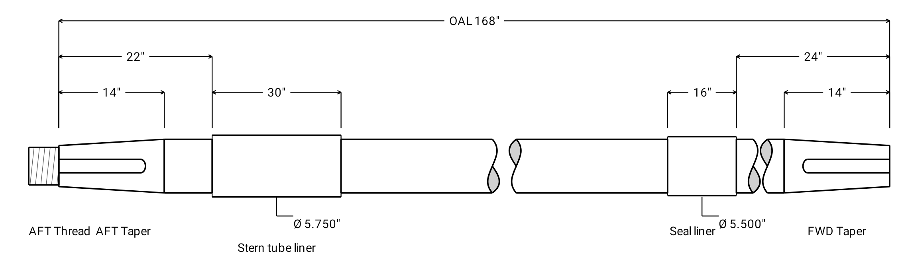
Building shafts and producing sheets in the office? Read 1. About ShaftSchematic, 2. The Shaft Editor, 3. Components Reference, 4. Documents, Printing & Export.
Reading sheets and taking measurements on the floor? Read 1. About ShaftSchematic, 5. Reading the Printed Sheets, 6. Recording Shop Measurements.
Stuck on something specific? The Troubleshooting chapter is organized by the question you'd ask. The Help & FAQ screen gives the short answers and is searchable; its topics link to the matching section here.
What ShaftSchematic does, the sheets it prints, the handful of ideas every user should hold, and how to find your way around the app. Read this chapter first, whether you build drawings in the office or work from them at the lathe.
ShaftSchematic draws marine propulsion shafts — tapers, threads, liners, bodies and keyways — and prints the shop sheets that follow a shaft through the repair: the schematic it arrives as, the runout and wear readings taken on it, the undercuts machined into it, and the drawing it leaves with. You build the shaft once. Every sheet is drawn from that one shaft, so a dimension changed on the schematic is changed on every sheet that shows it.
The app runs on Android phones and tablets. A phone is enough to build a drawing or type a reading; a tablet gives the drawing more room and is the better tool at the lathe.
A job moves through the shop in a familiar order: the shaft comes in, it is drawn, it is measured, the worn areas and undercuts are recorded, it is repaired, and it is checked one last time before it ships. Each sheet below belongs to one step of that path. All of them come from the same job file.
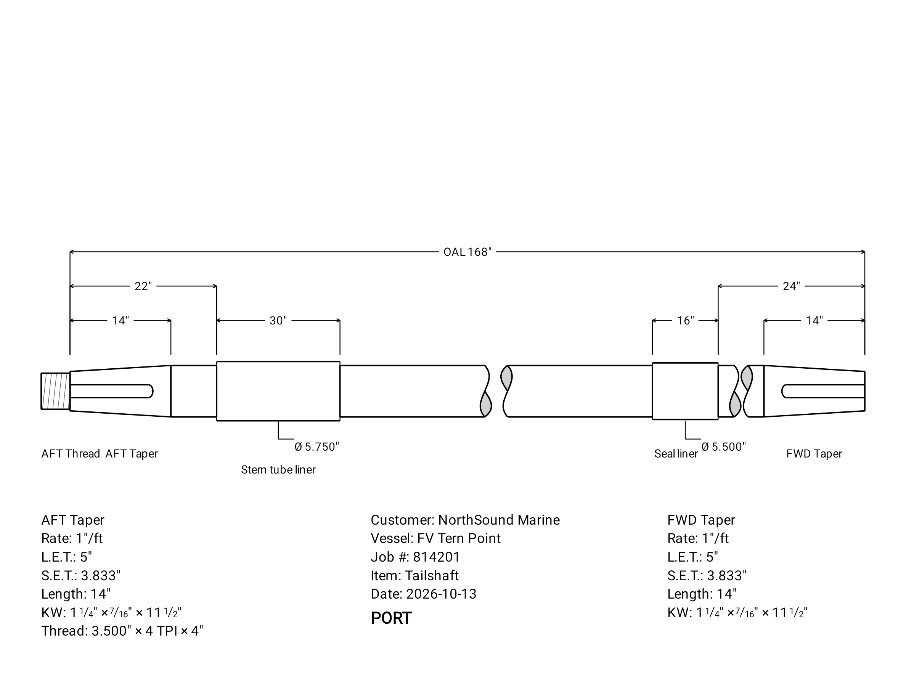
Any of these sheets can also print as a blank draft — dimension lines in place, values left empty — so measurements can be written in by hand on the job. See Documents, Printing & Export for printing and exporting, and Reading the Printed Sheets for a walk through each sheet.
The manual serves two readers. Office chapters are for the person who builds the shaft in the app from a print, a customer sketch or measurements, and produces the sheets. Shop chapters are for the machinist or foreman who reads the printed sheets, fills in blank drafts, and types readings into the app at the machine. Chapters marked Both are for everyone.
| Chapter | Audience | What it covers |
|---|---|---|
| 1. About ShaftSchematic | Both | This chapter: the sheets, the core ideas, finding your way around. |
| 2. The Shaft Editor | Office | Starting a job, overall length, adding and editing components, bare shaft, overlaps, undo, templates, mate duplicates, calculators. |
| 3. Components Reference | Office | Every control on tapers, threads, liners, bodies, keyways, blends and seal areas, liner shoulders and coupler bolt holes. |
| 4. Documents, Printing & Export | Office | The document tabs, PDF preview and options, blank drafts, consolidated output, the Final schematic, drawing profiles. |
| 5. Reading the Printed Sheets | Shop | What every line, rail, bubble and footer entry on each sheet means. |
| 6. Recording Shop Measurements | Shop | Typing runout, wear, undercut and worn-section readings into the app; working from blank drafts. |
| 7. Settings Reference | Both | Every setting, its default and what it changes. |
| 8. Troubleshooting, Data & Glossary | Both | Common problems, backups and file handling, and the terms used on the sheets. |
Throughout the manual, on-screen labels appear like + Add Component, and menu paths like Settings → Data → Back up all shafts….
A few rules shape everything the app does. Each one is here because, without it, something on the screen or the sheet would surprise you.
AFT is the propeller end; FWD is the engine end. AFT is always the left end of every drawing, on every sheet and on screen, so a shaft never appears reversed between two pieces of paper. Many components let you choose which end a position is measured from — the Measure From chips — because a print may dimension a liner from either end. The component is the same; only the quoted distance differs.
The OAL (overall length) is the shaft's length end to end, and every drawing is laid out against it. You always type it yourself; the app never fills it in or changes it. The field takes your value when you tap the green ✓, press Done on the keyboard, or leave the field after changing it; the red ✗ puts the old value back. The drawing does not chase each keystroke, because a half-typed length (36″ on the way to 367 3/4″) would briefly collapse the drawing. See The overall length.
When you change the OAL, components measured from FWD keep their FWD distance and move with the end; components measured from AFT stay put.
S.E.T. (small end of taper) and L.E.T. (large end of taper) are the two ends of a taper — named by diameter, not by which way they face. Both diameters print in the footer for every taper. Several measurements, such as undercut and worn-section distances, can be quoted from an S.E.T., the datum the shop actually measures from.
You add the features the shaft has — tapers, threads, liners, bodies, keyways, bolt holes — as components. Any length you don't cover is filled automatically with bare shaft — plain round bar, shown in the editor as a Body (auto) card and called an auto-body in this manual — so the drawing is always one continuous shaft. Bare shaft resizes itself whenever you move or change a component; you never have to keep the gaps in step by hand. You can set the bare-shaft diameter section by section, and you can turn one into a body of its own with the Explicit body checkbox when it needs a keyway or a name. A body may run under a liner or up to a taper; that is normal, not a conflict.
A value you type into a component is kept exactly as entered. The app never rounds it, snaps it to a neighboring edge, or “corrects” it — not even by a thousandth. If you type 14.062″, the sheet prints 14.062″. What moves to make room is the bare shaft between components, never your numbers. This is what lets a machinist trust the paper: every dimension on it is one somebody deliberately entered.
Every new drawing starts in the unit chosen under Settings → Units (Millimeters or Inches): a metric shop sets millimeters once and each new drawing is metric. The unit governs how values are shown and typed; it never changes a stored value. Switch from inches to millimeters and back, and every dimension comes back exactly as it was. Inch fields accept fractions as well as decimals — type 3 1/2, 7/8 or 3.5. On the printed sheets, fractions are set as true fractions (diagonal by default) rather than spelled out.
A shaft can also mix units — a metric thread and keyway on an otherwise imperial shaft, for instance — and print both units side by side. Those options are switched on in Settings; see Switches that reveal extra controls.
Runout readings, wear marks, pits, measured diameters, undercuts, worn sections and coupler bolt slots are reference marks: they record something about the shaft without changing its shape. They never alter the overall length, never split a body, and never count as an overlap with another component. You can record as many readings as the job needs without disturbing a single dimension on the schematic.
A job can hold two drawings of the same shaft: the original (the shaft as it came in) and the Final (the shaft as it leaves). The Final starts as a copy of the original and from then on the two are independent — an edit to one never reaches the other. Runout, wear and undercut records belong to the original, because that is the shaft they were measured on. Keeping both gives the job a clear before and after.
A 25-foot shaft drawn to true scale on a letter-size sheet would be a thin line. So the app shortens long plain runs on paper and keeps liners, tapers and keyways closer to their true proportions, letting the whole shaft fit at a readable height. A body that has been shortened a lot is drawn with an S-break, the drafting symbol for “length removed here”. Every printed dimension is still the true length. Measure from the dimensions, never with a scale rule on the sheet. How the drawing is fitted, and how to adjust it, is in Shaft height and compression.
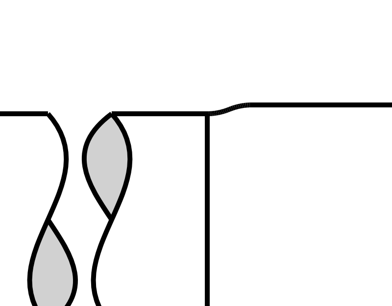
The app opens on its home screen, headed ShaftSchematic. From top to bottom it shows:
If the current shaft has unsaved changes when you start a new one or open another, the app asks Unsaved changes first: Save, Don't save or Cancel.
Every job opens in the editor. The editor holds six document tabs, listed in the navigation menu in this order:
| Tab | What you do there |
|---|---|
| Schematic | Build and edit the shaft: OAL, components, project information. Its toolbar is titled Shaft Editor. |
| Runout Sheet | Set runout stations and type TIR readings and high spots; print the runout sheet. |
| Wear Document | Mark worn areas, pits and measured diameters; print the wear document. |
| Undercut Drawing | Record undercut sections; print the undercut drawing. |
| Final Schematic | Start, edit and print the Final drawing and its blank runout sheet. |
| Consolidated Output | Choose what the combined sheet carries, record worn sections, preview, print, and export every document at once. |
Only Schematic is available on an empty shaft. The other five unlock once the shaft has at least one component and an OAL; until then they appear dimmed with the hint Add components first, because there is nothing yet to measure or print.
Tap the menu button (three lines) at the left of any tab's toolbar to slide out the navigation menu. It lists Home, the six document tabs, and a tools group: Keyway calculator, Taper calculator, Unit converter, Help & FAQ and Settings. The tools work at any time, even on an empty shaft. Tap outside the menu to close it. Home returns to the home screen; to finish with a job and clear the editor, use Close Document instead.
A thin strip across the top of every tab shows the job's file name, or Untitled draft if it has never been saved. An asterisk after the name means there are changes since the last save — including a runout reading or wear mark, not just a dimension. Tap the strip to name the job: an unsaved job goes to the save screen, a saved one opens Rename saved shaft.
The Schematic and Final Schematic toolbars carry, left to right:
The Runout Sheet, Wear Document, Undercut Drawing and Consolidated Output toolbars are simpler: the tab name, Save, and a ? button. Their print actions sit on the page itself — Print …, Preview … and Export … PDF, named for the document.
The built-in Help & FAQ screen is reachable from the home screen, the navigation menu and Settings. It is arranged in five sections — Getting Started, How-To Guides, Glossary, Settings Reference and FAQ — as cards you tap to expand. The Search help field at the top stays in view as you scroll and opens every matching card as you type. The ? button on the Runout, Wear, Undercut and Consolidated Output tabs opens Help directly at that tab's own guide.
This manual is in the app too, and works without a connection. Tap User manual at the top of Help to open it at the contents, or Read more in the manual under a Help card to open it at the matching section. When a Help search finds nothing it needs, Search the user manual under the results searches the manual for the same words. In the manual, the toolbar buttons jump back to the contents, find words on the page, and print the manual. Back returns from a cross-reference to where you were reading. Pinch to zoom in on a sheet.
The app uses the same screens on every device and adjusts only to the width it has:
| Device | Layout |
|---|---|
| Phone | Stays in portrait. The preview sits at the top with the controls scrolling beneath it; the navigation menu slides in over the screen. |
| Tablet, portrait | The same single column, with a taller preview. |
| Tablet, landscape (wide screen) | Two panes side by side. On the Schematic: preview, OAL and warnings on the left, components on the right. On the Runout, Wear and Undercut tabs: the sheet on the left, its controls on the right. The navigation menu stays open beside the content, so there is no menu button. |
Tablets rotate freely. Layout never changes a drawing or a printed sheet — a job looks the same on paper whichever device built it.
Save stores the job inside the app. The first save of a new job opens Save Drawing, where the File name is suggested from the job number, customer and vessel; later saves write straight to the same file. Save As… saves under a new name. The save screen also offers Save a copy to device…, to put a copy of the file somewhere outside the app, and Save as template….
While you work, the app keeps an autosave draft of any job with unsaved changes. If you leave without saving, or the app is closed, the draft appears under Unsaved drafts on the home screen; tap it to pick up where you stopped. A draft is not a saved file — save it to keep it in your list of shafts. See Autosave and unsaved drafts.
How to build a shaft in the editor: starting a job, setting the overall length, adding and editing components, working with bare shaft, clearing overlaps, undoing mistakes, and reusing work through templates and mate duplicates. This chapter covers the workflow; the field-by-field detail for each component is in Components Reference.
The editor is the Schematic tab. From top to bottom it shows:
The other document tabs, the calculators, Help and Settings are in the navigation menu (see The navigation menu). On a tablet held wide, the editor splits into two panes; everything works the same way in either layout.
Start from the home screen with New Drawing, Start from Template (see Templates) or Open…, or continue one of the Unsaved drafts listed above them (see The home screen). Inside the editor, the toolbar New and Open buttons do the same. If the current job has unsaved changes, the app asks first: Save, Don't save (the autosave draft still keeps the work), or Cancel.
The Project information button opens the Project Information sheet:
| Field | Prints on the sheets |
|---|---|
| Job Number | As “Job #:” in the footer and sheet headers. |
| Customer | As “Customer:”. |
| Vessel | As “Vessel:”. |
| Item (optional) | As “Item:”, a designation such as “Tail shaft”. Left blank, the line is left off the sheet entirely. |
| Shaft Position | PORT, STBD, Center or Other. Prints as the Side; Other prints no side. |
| Notes | Not printed. Notes stay with the job file for the office. |
The sheet date is not typed: every sheet prints the date it was made. Nothing on the sheet takes effect until you tap Save; Cancel throws the edits away. If you swipe the sheet closed with edits pending, the app asks Save changes? and offers Save, Keep editing or Discard.
A job is named when it is first saved. Tap Save (or the title strip) on an unsaved job and the Save Drawing screen opens with a File name already suggested: job number, customer, vessel and side joined with dashes, for example “J-2214 - Acme Marine - Northern Star - PORT”. With no project information, the suggestion is “Shaft_” followed by the date and time. If the name matches a saved shaft, the screen says so and asks before overwriting.
Once a job is saved, tapping the title strip opens Rename saved shaft. If you save a job and its project information now suggests a better name than the one it was saved under, a message offers Rename; it never renames over another saved shaft.
Unsaved drafts on the home screen are listed by the name the job would be saved under, so three drafts are told apart by job, not just by age. A draft with no project information shows as Untitled draft.
A new drawing starts in the unit chosen under Settings → Units (Millimeters or Inches), so set it once for the shop and every new drawing follows it. The job remembers its unit from then on: it reopens the way it was drawn, and changing the setting later never flips an open or saved job. While a job is open, the same chips switch how it is shown and typed. Inch fields accept fractions: type “3 1/2” or “150 3/4”.
Switching units never changes a dimension (see Millimeters and inches). To print one component in the other unit (a metric thread on an inch shaft), see Prints in: in | mm.
The Overall Length field holds the shaft's OAL (overall length), end to end. It is always the number you type; nothing in the app sets, grows or shrinks it for you.
The green ✓ and red ✗ appear beside the field only while you are changing the value. The ✗ puts back the stored length and changes nothing. The drawing does not follow your typing digit by digit; it changes once, when you accept the new length, so an edit from 368 1/2″ to 367 3/4″ never passes through a 36″ shaft on the way.
When a thread is excluded from the OAL, a read-only line under the field, Dimensioned OAL, shows the span the sheet's OAL dimension actually covers.
Each taper, liner and coupler bolt slot is measured from the end you chose for it with its AFT | FWD chips. When the OAL changes:
Every component is added from the one full-width + Add Component button under the overall length. It opens the Add Component chooser:
| Choice | The Add dialog asks for |
|---|---|
| Body | Start, Length and Diameter; optional face finish (Square or Blend) and seal areas at each end; an optional keyway behind the Keyway checkbox. |
| Liner | Measure From: AFT | FWD, start from that end, Length, Outer Ø; shoulders when they are switched on in Settings. |
| Taper | Measure From: AFT | FWD, start from that end, Length, S.E.T. (small end of taper) Ø, L.E.T. (large end of taper) Ø, rate (Auto or Manual), and an optional keyway. |
| Thread | Start (or AFT | FWD end when the thread is not counted in the OAL), Imperial (TPI — threads per inch) or Metric (M-designation), diameter and pitch, Length, optional thread relief, and Include thread in OAL. |
| Coupler Bolt Slot / Hole | Hole style (Seam or Cross-drilled), Measure From, position, hole Ø, count, spacing, and through or blind. |
Every field and option is described in Components Reference. Tap Add to place the component, or Cancel. The new component is selected straight away: it highlights in the preview and the carousel moves to its card.
These are suggestions in the box. Whatever you type replaces them, and the app stores exactly what you typed.
Bodies never warn about overlap. They are the shaft's base stock and are meant to run under liners and up to tapers (see Bodies and bare shaft).
Every control on a component's card that changes its shape, position or a value also appears in its Add dialog, under the same conditions, so nothing is out of reach at add time. The only exceptions are a few drawing-only switches, such as Show Ø on drawing, which are on the card alone (see Per-component drawing switches).
The preview draws the shaft as you build it: bare shaft, tapers, threads with their hatching, liners, keyways and bolt holes, at the same proportions the schematic will use.
A grid behind the shaft, the selection highlight and ◀ ▶ arrow buttons on the carousel are set under Settings → Editor Screen (see Editor Screen).
The preview's colors are set under Settings → Editor Screen → Preview Colors. They change the screen only; printed sheets are always black ink on white.
Under the Components heading (Swipe to select), the carousel holds one card per component, in physical order from AFT to FWD, with bare-shaft cards in their places between them. Swipe left or right to move along the shaft; the card you land on is selected and highlights in the preview. When a document opens, the AFT-most card is selected.
Each card is titled with a name worked out from its place on the shaft: Body #1, AFT Taper, FWD Thread, AFT Liner, MID Liner #2, and so on (see Component names). Bare shaft shows as Body (auto). To give a component your own name, tap its title or the pencil beside it (Rename), type, and tap Done. Clear the name to go back to the automatic one.
A value on a card is saved when you leave the field, either by tapping elsewhere or tapping Done. It is not saved on every keystroke. Tapping into a field and leaving without changing it does nothing at all.
Each card has a Save button at the bottom. It is greyed while everything on the card is saved and lights up while a field holds a value you have typed but not yet saved. Tap it to save that value.
A value the field cannot accept, such as a length of zero (Must be > 0), a negative start (Must be ≥ 0), or text that is not a number, shows a message under the field and is not saved; the field goes back to the stored value.
Tap the red trash icon (Remove) in the card's title row. The component is removed at once and a message such as Taper deleted appears with Undo; tap it to bring the component back. A deletion can also be undone later from History. Bare-shaft cards have no trash icon: bare shaft goes away when something else covers it.
A card can carry two kinds of strip under its title. An error strip means the component blocks printing (see Overlaps and the print gate). An advisory strip points out a value worth checking but blocks nothing. Advisories include:
| Message | Meaning |
|---|---|
| Extends past shaft length | The component runs past the OAL. Either the component or the OAL is wrong. |
| Very short segment (< 1 mm) | A length so short it is probably a typo. |
| Length exceeds 15 m — check for a typo | A length no shaft has. |
| Diameter exceeds 1 m — check for a typo | A diameter no shaft has. |
| Large Ø step vs adjacent body | A body butts another body more than half again its size. |
| Liner OD smaller than shaft Ø beneath it | The liner is thinner than the body it covers. |
| Zero pitch — thread renders flat | The thread has no pitch. |
A thread relief that is too large also carries an advisory; see Thread relief.
Every stretch of the shaft you have not covered with a component is drawn as bare shaft, so the drawing is always one continuous piece. Bare shaft is filled in automatically and shows in the carousel as a Body (auto) card. You never need to add bodies just to join components together.
On a Body (auto) card, Start and Length are greyed: they come from the components on either side. The Diameter field is live. Type a diameter to set that section of bare shaft. Each section takes its own diameter, so a shaft can step between liners without a single explicit body. Clear the field, or enter 0, to let that section take its diameter from its neighbors again.
If two sections with different diameters are joined (because the component between them was deleted), the joined section takes the AFT section's diameter. The FWD section's diameter is kept in reserve and comes back if the two are split again.
The auto card also carries Show bare-shaft Ø on drawing (one switch for all bare shaft) and the face finish and seal area controls; see Bodies.
An explicit body is a body you control: fixed start and length, its own diameter, a keyway, a name of its own. To turn bare shaft into one:
The card becomes a body card holding the section's current start, length and diameter, now editable. You need an explicit body to put a keyway in a plain end section, or to lock a section's size so it no longer follows its neighbors. You can also add one directly with + Add Component → Body.
Untick Explicit body on the body card. The app asks Make body automatic?, warning that the body's stored size will be replaced by bare shaft, and adds Its keyway will be removed too. if it has one. Tap Make automatic to confirm, or Cancel.
A shaft cannot have two solid features in the same place. The app treats these as collisions:
Components that only touch end to end do not collide. Bodies and bare shaft never collide with anything, coupler bolt slots never collide (they are drawn reference holes), and a thread excluded from the OAL sits outside the shaft and is not checked.
Printing, preview and export are blocked because a sheet with two features in one place cannot be machined from. A shaft with no components at all is blocked the same way, with the message Please add at least 1 component before export is active.
A thread placed between two components rather than at a shaft end shows Thread must be at a shaft end, not between components; move it to an end to print.
Above the carousel, a banner sums up shaft-wide advisories so they are not missed when the card concerned is several swipes away: 1 component extends past shaft length (or the count), and segments shorter than 1 mm. Advisories never block printing. Tap the ✗ (Dismiss warning) to hide the banner; it comes back if the set of warnings changes.
Tap History on the toolbar for Undo and Redo. Each is greyed when there is nothing to step to.
History covers the work on the shaft, on every tab of the job:
It does not cover project information, Settings, or the sheet sliders such as shaft height.
A quick burst of edits counts as one step, so undoing after typing a value takes you back to before you started typing, not one character at a time. History keeps the last 50 steps. It lasts for the editing session only: it is not saved with the file, and it starts fresh when you open, start or template a job.
A template is a saved shaft shape: geometry without a job. Use one when the shop sees the same shaft again and again, so the next job starts with the tapers, liners and bodies already in place.
If a template of that name exists, the app asks Replace existing template? before replacing it. Saving a template does not save or rename the job you are working on.
A template keeps the shaft's geometry only: components, their names, the unit and any per-component units. The job number, customer, vessel, item, notes, and every reading and measurement stay behind, as does any Final schematic.
Tap Start from Template on the home screen to open Templates. Templates are grouped twice:
Tap a heading to open it; any number of headings can be open at once, so you can compare templates from different groups. The number at the right of a heading is how many templates it holds. Each template card shows a drawing of the shaft, its name, its age, and a summary line such as “94 1/2″ OAL · Ø6″ max · 3 liners (A·M·F)”. The letters say where each liner sits, AFT to FWD: in the aft (A), middle (M) or forward (F) third of the shaft. Two templates with the same liner count can be told apart by this line alone.
Type in Search templates… to match names and summary lines; the groups give way to one list of matches. The Name and Date chips sort the list (tap the active chip again to reverse it).
The job opens as an unsaved, unnamed drawing, so the first save always asks for a name; the template itself can never be overwritten by a job made from it. The same ⋮ menu offers Rename and Delete. Deleting a template does not affect drawings already made from it.
A twin-screw vessel has a PORT and a STBD (starboard) shaft that are nearly identical. Draw one, then make its mate from it.
The mate is written as a new saved shaft and the message Created ‘…’ confirms it. The shaft you were working on stays open, unchanged; open the mate from Open when you are ready to work on it. Create stays greyed if the name is blank or already taken (A drawing with that name already exists.), so a mate can never overwrite its twin.
| Copied to the mate | Not copied |
|---|---|
| All geometry, exactly as drawn, including any edits not yet saved | Runout readings and the positions of dragged runout bubbles |
| Component names, the unit, per-component units, dual-unit display | Wear marks, pits and diameter readings |
| The job's sheet settings, such as shaft height | Undercuts and worn sections |
| Item and Notes | The Final schematic |
Three shop calculators sit in the navigation menu under the document tabs. Each opens over the current screen, starts blank every time, and has its own Units chips (in | mm, starting on the job's unit). They read nothing from the shaft and write nothing into it: read the answer and type it where you need it.
Taper calculator in the navigation menu opens Taper calculator, which solves the fourth value of a taper from any three:
Enter all four values and Calculate checks them against each other. Change any entry and the old answer clears, so a number that no longer follows from the fields is never left on screen. Clear empties the fields; Close leaves. In inches, the rate is also shown in inches per foot.
Keyway calculator in the navigation menu opens Keyway rough-cutter depth, for roughing a keyway in a bore with a cutter narrower than the finished keyway. Enter Bore Ø, the finished Keyway width and Keyway depth, and up to two rough cutters (Cutter 1 width, Cutter 2 width). For each cutter it shows the depth to measure at the cutter's outer edges so its flat bottom lands on the finished keyway's floor. The answer updates as you type.
In inches, each depth is also given as a fraction for checking against a scale, to the nearest 64th, 32nd or 16th (the Scale chips, 64 by default).
Unit converter in the navigation menu opens mm ↔ in converter. Type a Value (fractions such as 1 1/2 are fine) in the unit chosen on the chips:
To reach the converter from inside an Add dialog, switch on Settings → Drawing → Unit converter in Add dialogs (off by default). A calculator icon (Unit converter) then appears in the title of every Add dialog. The converter shows its answer only; type it into the field yourself.
Unlike the calculators, the Standard size… menu on a body or taper keyway does fill in the keyway's width and depth, exactly as if you had typed them, when you pick a size. See Standard size….
The Final Schematic tab uses this same editor, titled for the Final drawing, to record the shaft as it leaves the shop. Edits there never touch the original drawing, and edits here never touch the Final. Starting, resetting and printing the Final schematic are covered in The Final Schematic tab.
Every field, chip and switch on each component's card and Add dialog: what it means, which end or face it measures from, when it appears, and what it puts on the printed sheet. Written for the person building the shaft; the shop callouts say how each feature reads on paper.
A shaft is built from five kinds of component: tapers, threads, liners, bodies and coupler bolt slots / holes. Keyways live on tapers and bodies. You add components from + Add Component and edit them on their cards in the carousel under the preview; that workflow, along with undo, overlaps and bare shaft, is covered in The Shaft Editor. This chapter is the field-by-field detail.
A taper is a conical section, usually the propeller taper at the AFT end or the coupling taper at the FWD end. The app works in shop terms: S.E.T. (small end of taper) and L.E.T. (large end of taper). The small end always faces the nearer end of the shaft. A taper whose middle lies in the aft half of the shaft has its S.E.T. at its aft end; one in the forward half has its S.E.T. at its forward end.
| Field / control | What it means |
|---|---|
| Measure From: AFT | FWD | Which end of the shaft you are measuring the start from. It changes how the position is typed and shown, never where the taper sits. Default AFT. |
| Start from AFT / Start from FWD | Distance from the chosen shaft end to the near end of the taper. A propeller taper flush with the AFT end is “0” from AFT; a coupling taper flush with the FWD end is “0” from FWD. |
| Length | Axial length of the taper. On a FWD-measured taper, a length change keeps the FWD end where it was and the taper grows toward AFT. |
| S.E.T. Ø, L.E.T. Ø | Small-end and large-end diameters. On the card the two fields are listed in shaft order, AFT end first, so an aft-half taper shows S.E.T. then L.E.T., and a forward-half taper shows L.E.T. then S.E.T. |
| Rate mode: Auto | Manual | Auto works the rate out from Length, S.E.T. and L.E.T. Manual lets you type it. Default Auto. |
| Rate (1:12, 3/4"/ft, or decimal) | The taper rate: a ratio (1:12), inches per foot (3/4″/ft — the shop's 1:16; “3/4 in/ft” and “3/4/ft” are read the same way) or a decimal; a bare fraction like 3/4 is refused as ambiguous and the message names the forms to write. Greyed out in Auto, where it shows the computed rate. Editable in Manual. |
| Keyway checkbox and section | See Keyways. |
For working a taper out from other combinations of numbers, use the taper calculator (see Calculators and tools).
A thread is an external threaded section: the propeller-nut thread beyond the S.E.T., or a coupling-nut thread. It draws as a hatched section whose hatch leans with the pitch.
The Add Thread dialog offers two chips: Imperial (TPI) and Metric (M-designation). The choice is made when the thread is added and decides which fields the card shows from then on.
| Field / control | What it means |
|---|---|
| Include thread in OAL | On (default): the thread is part of the overall length and is placed by its Start. Off: the thread sits outside the OAL, beyond the end of the shaft. |
| Start | Distance from the AFT end to the start of the thread. Shown only while the thread counts in the OAL (overall length). |
| Thread end: AFT | FWD | Replaces Start when the thread is excluded from the OAL: which end of the shaft the thread hangs off. Default AFT. |
| Major Ø, TPI | Imperial threads only. TPI accepts decimals and fractions. |
| Thread designation | Metric threads only, for example “M20×2.5”. |
| Length | Total axial length of the thread, including any relief. |
| Thread relief switch and fields | See below. |
A typical propeller shaft is quoted S.E.T. to S.E.T., with the nut threads standing outside that figure. Turn Include thread in OAL off and pick the Thread end. The app places the thread flush against that end of the shaft, outside the dimensioned length, and keeps it there when the OAL changes. The OAL dimension on the sheet stops at the shaft end and the thread prints beyond it.
A relief is the plain groove turned below the thread root where the thread runs up to its shoulder, so the tool can run out and the nut seats. Turn on Thread relief and three more controls appear:
| Field / control | What it means |
|---|---|
| Relief length | Axial length of the groove. Starts at 1 1/2 pitches (3/8″ on a 4 TPI thread); type over it. |
| Relief Ø | Diameter of the groove. Starts just under the thread root (major Ø less 1.3 pitches); type over it. |
| Relief at: AFT | FWD | Which end of the thread carries the groove. The app first suggests the inboard end: FWD for a thread at the AFT end of the shaft, AFT for one at the FWD end. |
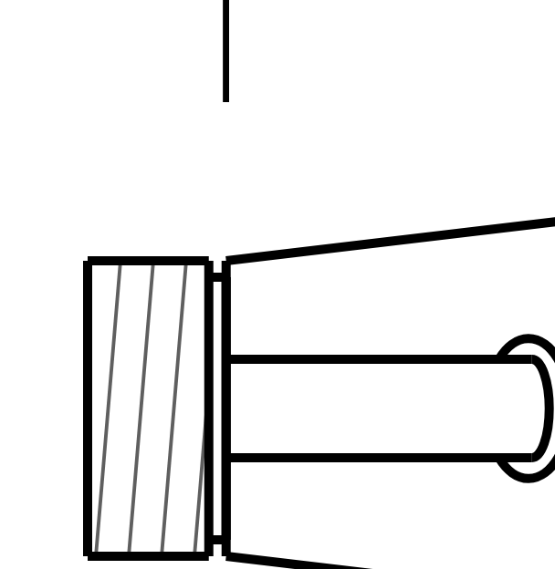
A liner is a sleeve shrunk or bonded over the shaft, such as a bearing or seal liner. It has a length and an outer diameter; the shaft underneath carries on as a body.
| Field / control | What it means |
|---|---|
| Measure From: AFT | FWD | Which shaft end you measure the liner from. Display and entry only; switching it never moves the liner. Default AFT. |
| Start from AFT / Start from FWD | Distance from the chosen shaft end to the near edge of the liner. |
| Length | Axial length. On a FWD-measured liner, the FWD edge stays put and the liner grows toward AFT. |
| Outer Ø | The liner OD (outside diameter). |
| Shoulders section | Optional stepped ends; see below. Hidden unless switched on in Settings. |
A shoulder is a machined step at a liner end: over the outermost part of the liner the OD drops to a reduced diameter, with a radiused corner where the step meets the full OD. The step is cut into the liner itself; nothing else on the shaft moves.
The shoulder controls are hidden until you switch them on at Settings → Drawing → Liner shoulders, because most shafts never need them. A liner that already has shoulder values always shows its shoulder controls, whatever that setting says.
| Field / control | What it means |
|---|---|
| AFT and FWD rows: None | Shoulder | Whether that end of the liner is stepped. |
| Shoulder length | How far in from the liner end the reduced diameter runs. |
| Shoulder Ø | The reduced diameter. |
| Edge radius: button | The corner radius where the step face meets the liner OD, picked from a list: Sharp, 1/16″, 1/8″, 3/16″, 1/4″, 3/8″, 1/2″ (shown in mm on a metric drawing). Starts at Sharp. |
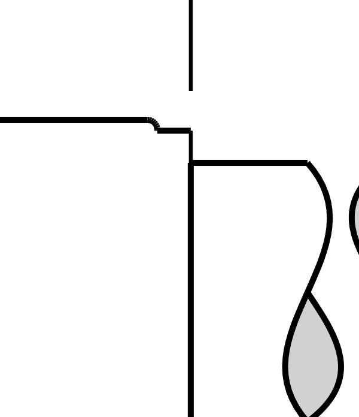
Bodies are the plain cylindrical shaft between the other components. The app fills every uncovered gap with bare shaft (an auto-body) on its own; you add an explicit body when a section needs its own diameter, a keyway, or a name. How the two kinds work together, and how to promote or demote one, is in The Shaft Editor.
| Field / control | What it means |
|---|---|
| Explicit body checkbox | Ticked on every explicit body. Unticking asks Make body automatic? and, on Make automatic, hands the span back to the auto fill (its keyway goes with it). |
| Start | Distance from the AFT end of the shaft. Bodies have no Measure From chip. |
| Length | Axial length. |
| Diameter | The body diameter. |
| Face finish | Square or Blend at each end; see below. |
| Seal areas | Grooved fiberglass seat areas at either end; see below. |
| Keyway checkbox and section | See Keyways. |
The card also carries Show Ø on drawing, Show name on drawing, Compress on drawing and Shade on drawing; see Per-component drawing switches.
A bare-shaft card is titled Body (auto). Start and Length are greyed out because the surrounding components decide them. Diameter is editable and sets the diameter of that one stretch of bare shaft only. The card also carries Show bare-shaft Ø on drawing, the same Face finish and Seal areas controls as an explicit body, and the Explicit body checkbox that promotes it.
A blend is a smooth machined transition at a body end, curving from the diameter on the other side of the face into the body's own diameter, with no square shoulder and no stated taper rate. The curve is cut from the body that carries it; no other component changes.
| Field / control | What it means |
|---|---|
| AFT row: Square | Blend | Finish of the body's AFT face. |
| Blend AFT | Shown while AFT is Blend: how far in from the face the curve runs. Starts at 2″ (or a quarter of a short body). |
| FWD row and Blend FWD | The same for the FWD face. |
| Shape: S-curve | Fillet | Eased cone | Shown once either face is blended; one shape for both faces. S-curve is smooth at both ends (default). Fillet is smooth at the large end and meets the small end at a corner. Eased cone is a straight cone with both corners softened. |
A seal area is the stretch at a body end that the fiberglass seats into, cut with small radius grooves. It belongs to the body section, not to the face finish: a body can have grooves at a square end, grooves behind a blended end, or a blend with no grooves.
| Field / control | What it means |
|---|---|
| AFT, FWD checkboxes | Whether that end has a seal area. |
| Seal area AFT, Seal area FWD | Shown under a ticked end: the length of the seal area, measured in from the face. Starts at 4″ (or a quarter of a short body). |
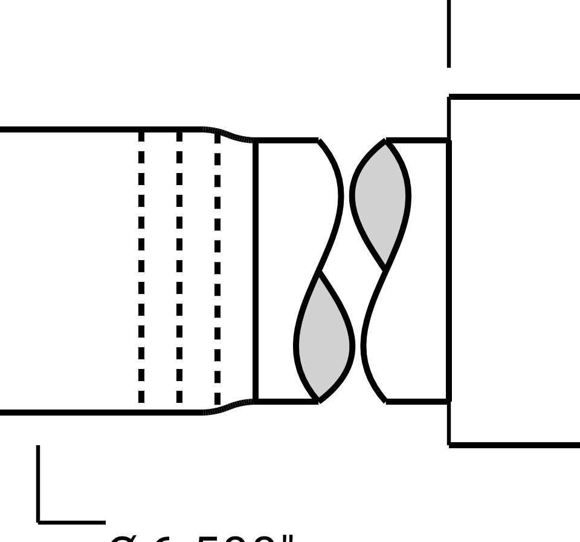
Tapers and explicit bodies can each carry one keyway. The controls are the same on both, with two differences: a body keyway chooses which end it runs from, and a taper keyway always runs from the S.E.T.
The whole keyway section, including its unit chip, sizes, standard-size picker, captured and spooned switches and the clocking switches, sits behind one Keyway checkbox.
| Field / control | What it means |
|---|---|
| KW from: AFT | FWD (bodies only) | Which end face of the body the keyway runs from. An open keyway runs off that face; a captured one is inset from it. |
| Keyway in: in | mm | The unit the keyway is typed and printed in. Shown only when Settings → Drawing → Per-component units is on. Choosing the component's own unit clears the choice. |
| KW W × KW D | Keyway width and keyseat depth into the shaft. |
| Standard size… | A menu of standard key stock that fills W and D; see below. |
| KW L | Keyway length. On a spooned keyway this is the length to the base of the spoon. |
| Captured keyway switch | Off: an open keyway that runs out of the face. On: a keyway closed at both ends, inset from the face. |
| KW Inset from SET (taper) KW Inset from AFT / KW Inset from FWD (body) | Shown while captured: the distance from the S.E.T. (taper) or from the chosen body face to the near end of the slot. Starts at 1/2″. |
| Keyway spooned switch | Open keyways only. Adds the spoon at the closed end. On a captured keyway it reads Keyway spooned (N/A — captured) and cannot be switched. |
| Clocking switches | Shown when the shaft has two or more keyways; see below. |
Keyway values show as shop fractions down to 1/32″ on inch drawings.
A new body keyway's KW from chip starts on the end opposite the shaft's existing keyway when there is exactly one, so a second keyway on a shaft with an AFT taper keyway starts at FWD. Otherwise it starts at AFT. This is a starting choice only; tap the other chip to change it.
Tap Standard size… to pick from a standard key-stock table. Inch keyways use ANSI (American National Standards Institute) B17.1 plain parallel keys; metric keyways use DIN (Deutsches Institut für Normung) 6885-1. When the host diameter falls within the table, the first entry is marked with a check and Suggested for Ø …: the size for the body Ø on a body, or for the L.E.T. on a taper. Every other size stays in the list, because the shop fits the key it has.
When the shaft carries two or more keyways, each keyway's section shows two switches:
| Control | What it means |
|---|---|
| Keyways 180° apart | The keyways are on opposite sides of the shaft. |
| Keyways 90° apart | The keyways are a quarter turn apart. Turning one of these on turns the other off. |
| From AFT keyway, viewed from aft: CW | CCW | Shown with 90°: which way the other keyway lies from the AFT keyway, looking from aft. |
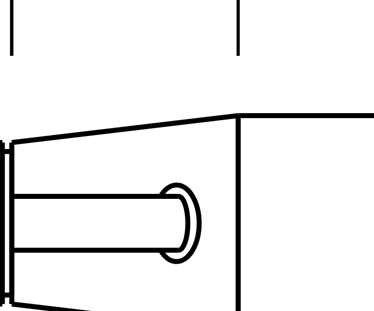
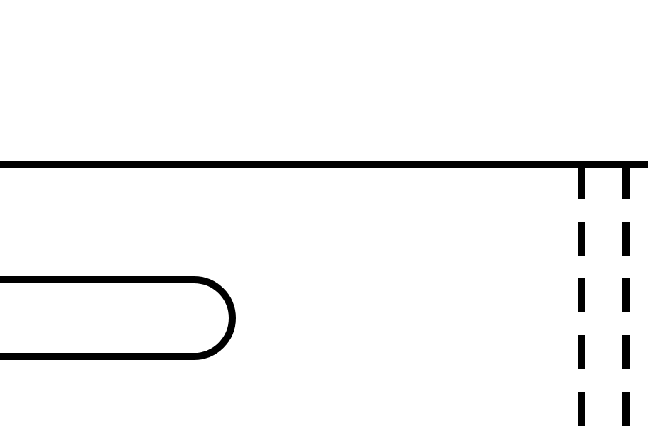
This component is one axial row of bolt holes at a coupling. Add it with Coupler Bolt Slot / Hole in the Add Component chooser. It comes in two styles:
Bolt slots and holes are reference marks (see Reference marks never change the shaft): you can place them over a body, a liner or anything else.
| Field / control | What it means |
|---|---|
| Hole: Seam | Cross-drilled | The style. Changing it changes only how the row draws and prints. |
| From keyway: 90° | In line | Cross-drilled only: where the hole sits around the shaft relative to the keyway. Default 90°, because a bolt in line with the keyway would pass through the key. |
| Measure From: AFT | FWD | Which shaft end the position is measured from. Default FWD in the Add dialog. |
| First slot from AFT / First slot from FWD (seam) Hole center from AFT / Hole center from FWD (cross-drilled) | Distance from the chosen shaft end to the center of the nearest hole. From FWD, the row runs aft from that hole; from AFT, it runs forward. |
| Hole Ø | Diameter of each hole. |
| Count | Number of holes in the row, at least 1. Changing it keeps the hole nearest the measured end where it is. |
| Spacing | Shown when Count is more than 1: center-to-center distance between holes. |
| Through hole switch | On (default): a through hole. Off: a blind hole. |
| Depth | Shown when the hole is blind: drill depth. |
| Show dimension rail switch | Card only, off by default. On, the schematic and consolidated sheets print one dimension for the row: from the end of the shaft it is measured from to the center of the nearest hole, carrying the distance you entered. See Per-component drawing switches. |
The Add dialog checks that every hole fits on the shaft and shows Row extends past the AFT end of the shaft or Row extends past the end of the shaft if one would not.
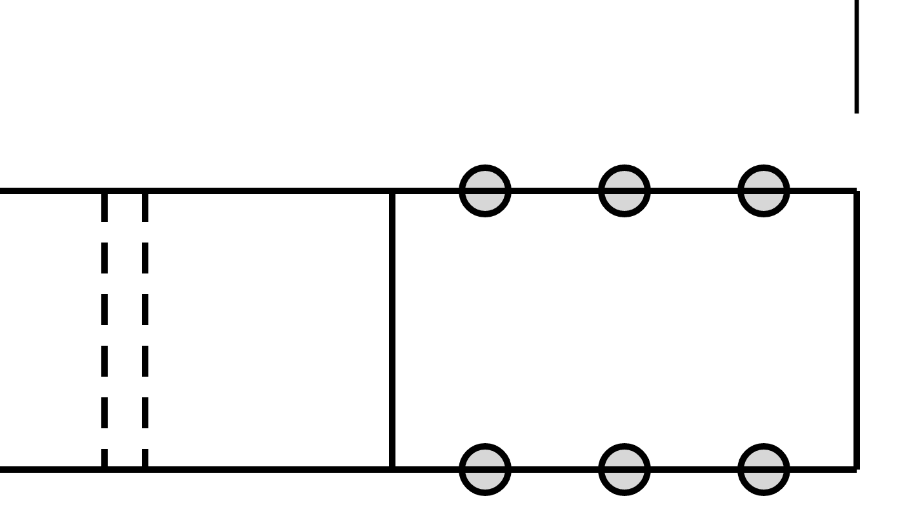
These switches change only how an already-drawn component prints. They are on the cards and not in the Add dialogs, because you reach for them after looking at a printed sheet. None of them changes a dimension, a position or a footer value.
| Switch | Found on | Default |
|---|---|---|
| Show Ø on drawing | Explicit bodies, liners | Bodies off, liners on |
| Show bare-shaft Ø on drawing | Bare-shaft cards (one switch for all bare shaft) | Off |
| Shade on drawing | Explicit bodies, tapers, liners | Follows the Settings checkbox for that kind |
| Show name on drawing | Explicit bodies, tapers, threads, liners | Follows Component names on drawing (Settings → Drawing) |
| Compress on drawing | Explicit bodies | Off for new bodies |
| Prints in: in | mm | Explicit bodies, tapers, threads, liners | The document unit |
| Show dimension rail | Coupler bolt slots and holes | Off |
Controls the diameter callout that hangs below the shaft for this component. The sheet prints one callout per distinct diameter, placed on the longest shown component with that diameter, so hiding one body moves the callout to another body of the same Ø rather than removing it. Body and liner callouts are separate; a liner OD is never merged with a body Ø.
Reach for it when a callout lands somewhere the diameter could not have been measured, such as a body running under fiberglass. Model the covered run and the bare window as separate bodies and show the Ø only on the window. The footer “Body:” line still lists every body diameter.
On a bare-shaft card, Show bare-shaft Ø on drawing is one switch for all bare shaft at once.
Grey shading is set by kind at Settings → PDF Export Options → Shade in Components (Bodies, Tapers, Liners; all off by default), and repeated on each document's PDF options. The card switch works in three ways:
Once you flip the switch, that component keeps your choice even if the Settings checkbox changes later. The preview box marks the components that will print shaded.
Controls whether this component's name prints below the shaft. It works the same three ways as shading: untouched, it follows Settings → Drawing → Component names on drawing (on by default), and the line under the switch reads Following Settings → Drawing → Component names; switched on, the name prints even with that setting off; switched off, it is hidden even with the setting on. Hiding one name never renumbers the others. Bare shaft never prints a name.
On a long shaft the sheet shortens plain body runs so everything fits the page, and draws an S-break in a run that is shortened a lot. Compress on drawing decides whether this explicit body may be shortened.
Bodies in older saved jobs may have it on. When an S-break appears is set at Settings → Drawing → Body S-break; how compression works is in Shaft height and compression, and what the break means on paper in S-breaks.
Prints this one component's values in a different unit from the document. It appears at the foot of the card only when Settings → Drawing → Per-component units is on. It changes how the component prints, not how you type it: the card's fields stay in the document unit. Tapping the document's own unit clears the choice.
A keyway has its own Keyway in: chip, which does change the unit you type the keyway in, because a metric keyway on an inch shaft should be entered in millimeters. That chip is in the Add dialogs as well as on the cards. A metric thread prints in millimeters without any chip.
Show dimension rail is on coupler bolt slot and hole cards only. Off, the row prints no dimension; on, the schematic and consolidated sheets add one dimension rail from the end of the shaft the row is measured from (Measure From) to the center of the nearest hole, carrying the distance you entered. It changes nothing about the row itself, which is why it is not in the Add dialog. See Coupler bolt holes.
Every taper, thread, liner and explicit body has a name. Until you give it one, the app names it by position:
| Kind | Default names |
|---|---|
| Taper | AFT Taper or FWD Taper, by which end is smaller; numbered (AFT Taper #2) only when two share a name. |
| Thread | AFT Thread or FWD Thread, by which half of the shaft it is in; numbered when two share a name. |
| Liner | AFT Liner, MID Liner or FWD Liner, by position along the shaft; with exactly two liners they are always AFT and FWD. Numbered when two share a name. |
| Explicit body | Body #1, Body #2… from AFT to FWD. |
| Bare shaft | Body (auto); cannot be renamed. |
| Bolt slot / hole | Coupler Bolt Slot or Coupler Bolt Hole, by style; cannot be renamed. |
To go back to the default name, clear the field and press Done. A renamed component keeps its name wherever it moves.
This chapter covers how to turn a finished shaft into paper: which tab produces which sheet, how to preview and tune a page before it prints, how to print directly or save a PDF, and how to produce blank write-in drafts, the consolidated sheet, and the Final schematic. It is written for the office user who produces the sheets. For how each sheet reads at the lathe, see Reading the Printed Sheets; for typing readings into the app, see Recording Shop Measurements.
Every job can produce six documents. Each one comes from its own tab in the editor's navigation menu, in this order:
| Tab | Document it produces | What it carries |
|---|---|---|
| Schematic | Schematic | The dimensioned shaft drawing: dimension rails, Ø callouts, component names and the spec footer (tapers, keyways, threads, job information). |
| Runout Sheet | Runout Sheet | The shaft profile with numbered runout bubbles, recorded TIR (total indicated runout) values and high spots, and the optional coupling face end view. |
| Wear Document | Wear Document | The shaft outline and liner detail strips with wear areas, pit marks and measured Ø readings. |
| Undercut Drawing | Undercut Drawing | Machined-below-surface sections, shown in zoomed detail strips with their lengths and Ø. |
| Final Schematic | Final schematic and a blank final runout sheet | The drawing the shaft leaves with, after the wear and undercut work. Every sheet is marked Final. See The Final Schematic tab. |
| Consolidated Output | Consolidated Sheet | One sheet that combines the schematic's dimensions with the runout bubbles, the wear information, or both. This tab also holds Export all. See The Consolidated Output tab. |
The Schematic tab is always available. The other five tabs stay greyed out (with the hint Add components first) until the shaft is built: at least one component and an overall length.
Print comes first because most shops work from paper. The PDF file is the archive or email copy.
| Document | Needs | Prints without it |
|---|---|---|
| Schematic | At least one component (body, taper, thread or liner) and no overlapping components. | The OAL (overall length). A shaft with no OAL typed yet draws to the end of its last component. |
| Runout Sheet | A built shaft. | Readings. Stations without a value print as empty bubbles, ready to fill by hand. |
| Wear Document | A built shaft. | A wear record. Without one it prints a clean inspection form. |
| Undercut Drawing | A built shaft. | Recorded undercuts. |
| Consolidated Sheet | A built shaft with no overlapping components. | Readings, wear data and worn sections. The parts with no data simply print empty. |
| Final schematic | A Final drawing started on the Final tab. | Not applicable. |
The preview shows the real page: the same drawing code builds the preview, the printed sheet and the PDF file, so what you see is exactly what prints. Open it with the PDF preview icon on the Schematic or Final tab, or with the Preview … button on any other document tab.
The preview's top bar carries, from left to right: Back or Close preview, the title (for example Runout Sheet Preview), the PDF options icon, a labeled Print button, and the Export PDF icon.
Tap the PDF options icon (the slider icon) to open the PDF options panel at the bottom of the screen. The panel does not block the page:
Four sliders redraw the page while you drag: Shaft height, Body S-break, Liner & taper compression and Line thickness. During the drag the preview shows a quick lower-resolution page. When you lift your finger the value is saved and the page redraws sharp. Every other control (chips, checkboxes, and the thread, bubble and wear sliders) is saved when you tap it or let go, and then the page redraws. While a new page renders, the old page stays on screen and a small spinner turns in the top-right corner.
Every document's options panel has the same layout. A short scope note sits at the top, then a Content row of chips, then a set of collapsible sections. Tap a section heading to open or close it. Some headings show the current value on the right (for example Lines & text shows the line weight, and Units shows Single or Dual · Inline).
The scope note reads: Drawing settings here are app-wide — the same ones as Settings → Drawing — so every document follows them. Controls saved with this job say so. The panel holds two kinds of control:
Blank draft is neither. It is never saved: it is off each time the app starts. See Blank drafts and Template mode.
The chips choose what the sheet prints. A selected chip shows a check mark.
| Chip | Default | Where | What it does |
|---|---|---|---|
| Blank draft | Off | Every sheet | Prints the drawing with every value blanked for handwriting. Off each time the app starts. |
| Ø callouts | On | Schematic, Final | Can be tapped only while Blank draft is on. On: the blank sheet keeps its Ø leaders with a write-in rule. Off: the leaders are left out so diameters can be written in wherever they belong. |
| Component names | On | Schematic, Final | Component names under the shaft. This is the default for every component; a card's Show name on drawing toggle overrides it in either direction (see Show name on drawing). The same setting is Settings → Drawing → Component names on drawing (see Component names). |
| Coupling face | Off | Runout, Consolidated | Prints the coupling end view, looking forward, at the bottom right. Saved with this job and shared with the Runout tab. |
| Runout bubbles | Off | Final only | Turns the Final schematic into a Schematic + Runout sheet. See The Final Schematic tab. |
The sections always appear in the same order on every sheet, with the most-used first. A sheet leaves out any section it has nothing for. Shaft and Wear start open; the rest start folded, and they fold again each time the panel is reopened.
Each panel offers only the controls its sheet actually uses.
| Sheet | Content chips | Sections and controls |
|---|---|---|
| Schematic / Final | Blank draft, Ø callouts, Component names (+ Runout bubbles on Final) | Shaft (all four controls) · Thread · Lines & text (all three) · Shade in Components · Measurement reference · Units |
| Runout Sheet | Blank draft, Coupling face | Shaft (all four) · Runout bubbles · Thread · Lines & text (Line thickness, Fractions) · Shade in Components · Units |
| Consolidated Sheet | Blank draft, Coupling face | Every section except Wear. The fullest panel. |
| Wear Document | Blank draft | Shaft (Shaft height only) · Wear · Thread · Lines & text (Line thickness, Fractions) · Shade in Components (no Explicit bodies only) · Units |
| Undercut Drawing | Blank draft | Thread · Lines & text (Line thickness, Fractions) · Shade in Components (with the line-art row, no Explicit bodies only) · Units |
| Control | Default | Scope | What it does |
|---|---|---|---|
| Shaft height | Standard (the default drawing size) | This job | Sets how tall the shaft draws on paper, by value in inches, from 1/2″ to 1 1/2″. Standard (…) returns to the default size, and a release near the standard height snaps to it. The setting is one value for the job, used by the schematic, runout, consolidated and wear sheets. See Shaft height and compression. |
| Body S-break | below 50% | App-wide | How far a body run may be shortened before it prints the S-break symbol. Runs from Never to Always in 5% steps. Default (50%) resets it. Not on the wear or undercut sheets, which never break. |
| Keep liners and tapers proportional lengthwise | Off | This job | Asks for liners and tapers at true length. While it is ticked the compression slider is greyed out. |
| Liner & taper compression | 100% | This job | How far liners and tapers may shorten when the page needs the room. 100% gives the most room; 0% asks for none. A line under the slider reports how much true length they actually keep at this height. |
| Control | Default | Scope | What it does |
|---|---|---|---|
| Components: Complete shaft | On | This job | Prints the whole-shaft profile. Turning it off gives its height to the detail strips. |
| Compact strips | Off | This job | Strips print at the shaft's own scale instead of stretching to the page. |
| Component checkboxes, Default (all liners), All, None | All liners | This job | Choose which components get a detail strip. |
| Strip size | 100% | This job | How tall the detail strips draw, 50% to 200% in 10% steps. It changes the layout only, never a value. |
| Trace depth exaggeration | 25% | This job | How deep the drawn worn profile dips, 5% to 25% of the liner radius. Save as default makes the current value the app-wide default. The printed Ø values never change. |
| Wear area shade | 16% | App-wide | How grey the wear bands print, 5% to 35%. The cap keeps the pit marks readable. |
| Taper–liner join | 3″ | App-wide | How much bare shaft may lie between a taper and a liner that share a strip before the gap breaks, 0″ to 12″ in 1/2″ steps (10 mm steps on a metric job). |
The Wear tab itself carries the same trace-depth row. For recording the wear data, see Wear.
| Control | Default | Scope | What it does |
|---|---|---|---|
| Bubble size | 100% | App-wide | Size of the runout bubbles, 60% to 150% in 5% steps. The spacing between bubbles scales with them. Standard (100%) resets it. |
| Bubble height | 100% | App-wide | How far the first row of bubbles hangs below the shaft, 50% to 200%. The panel marks it Experimental. |
Both sliders also change the bubbles on the Runout tab's on-screen drawing. They have no row in Settings.
| Control | Default | Scope | What it does |
|---|---|---|---|
| Thread slant | 3× | App-wide | How far the thread hatch leans, from 1× true to 10×. |
| Thread density | 50% | App-wide | How many of the true crests the hatch draws, from Sparse (15%) to 100% true. |
| Control | Default | Scope | What it does |
|---|---|---|---|
| Line thickness | 100% | App-wide | Weight of every line, 50% to 200%. |
| Dimension arrows | Small | App-wide | Small, Medium or Large arrowheads. Schematic and consolidated sheets only (the sheets with dimension rails). |
| Fractions | Diagonal | App-wide | Stacked, Diagonal or Plain. |
Each of these is described in full in Lines, threads and text, along with Settings → Drawing → Output font, which is not on the options panel.
| Control | Default | Scope | What it does |
|---|---|---|---|
| Bodies | Off | App-wide | Fills bodies light grey instead of outline only. |
| Explicit bodies only | Off | App-wide | Can be ticked only while Bodies is on. Shades only bodies you added; bare-shaft (auto) sections stay unshaded. Hidden on the wear and undercut sheets, which shade every body run alike. |
| Tapers | Off | App-wide | Fills tapers. |
| Liners | Off | App-wide | Fills liners. On a consolidated sheet that prints Ø values inside the profile, this box shows unchecked and greyed with the note Ø values print inside the profile on this sheet, so the values stay readable. Your setting returns on every other sheet. |
| Undercut drawing: line art (no shading) | Off | App-wide | Undercut sheet only. Drops every fill on the printed undercut sheet; the cuts read from their faces and floor lines. |
A card's Shade on drawing toggle can shade or unshade one component against these defaults (see Shade on drawing). The liner lock above still applies over it.
| Control | Default | Scope | What it does |
|---|---|---|---|
| Measurement reference | Auto (closest end) | App-wide | Which end the dimension rails measure from: each from its closer end, or all from AFT or FWD (see Datum and length dimensions). Schematic and consolidated sheets. |
| Dual units | Off | This document | Prints every dimension in both inches and millimeters. |
| Dual-unit layout | Inline | App-wide | Inline (1 1/2″ [38.1 mm] on one line) or Stacked (the second unit under the first; see Lines, threads and text). Greyed out while Dual units is off. |
The app has two ways to produce a sheet for marking up by hand. They answer different needs.
A blank draft prints the full drawing and form layout with every value left empty. Dimension lines still cut their break, which becomes a space to write in. The footer keeps every label — “Rate:”, “L.E.T.:” (large end of taper), “KW:” (keyway), “Customer:” and so on — each followed by a writing rule, and the lines are spaced wider to suit handwriting. Component names and S.E.T. (small end of taper) markers still print, because they identify parts rather than measure them.
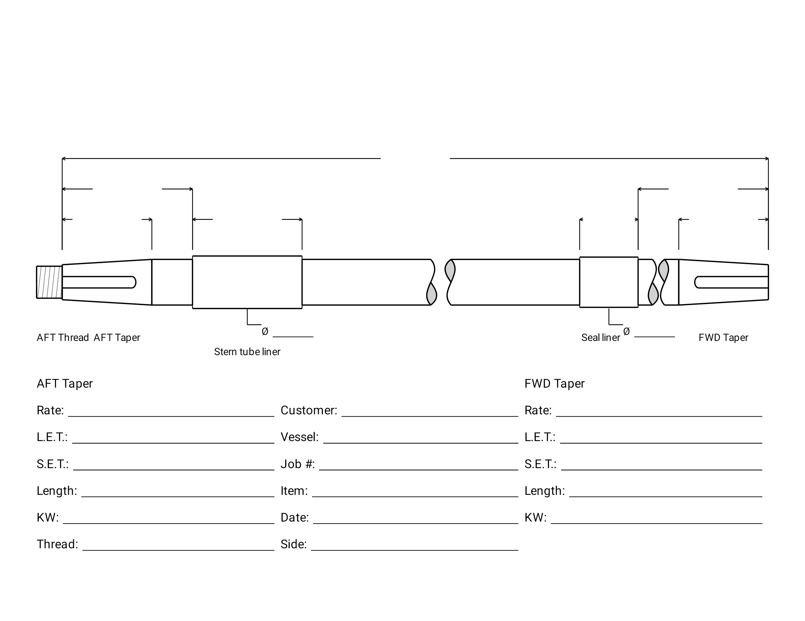
What each document blanks:
| Document | On the blank draft |
|---|---|
| Schematic | Dimension values, Ø callout values (write-in rule after the Ø), footer specs, job information and the side stamp. The Ø callouts chip decides whether the Ø leaders print at all. |
| Runout Sheet | Job information, OAL and TIR values. The bubbles stay; they are the write-in circles. |
| Wear Document | Job information and OAL. Recorded wear is left out, giving a fresh inspection form; the profile and the liner detail strips still print. |
| Undercut Drawing | Job information and OAL. Recorded undercuts are left out. |
| Consolidated Sheet | Job information, dimensions and recorded values. |
To turn it on, tap the floating Blank draft (write-in) chip on the Schematic and Final previews, or use the Blank draft (write-in) switch above the Print button on the other document tabs. The Blank draft chip in each options panel is the same switch. How each blank sheet reads is shown in Blank drafts.
The data you recorded is never touched. Blanking changes only the printed page. A blank export adds _BlankDraft to its filename.
Template mode prints the schematic as the shaft outline only, centered on the page, with no dimension rails, no labels and no footer. Turn it on with Settings → PDF Export Options → Template (shaft only).
| Need | Use |
|---|---|
| A form with the dimension lines laid out, for the machinist to write measured values into | Blank draft |
| A clean outline to sketch on freely, with no rails or footer in the way | Template mode |
| A write-in schematic without Ø leaders, so diameters can go where they belong | Blank draft with Ø callouts off |
| Blank runout, wear or undercut forms | Blank draft on that tab |
A printed sheet and an exported PDF of the same document come from the same drawing step, so they are identical. The print job is named like the export file, so a print queue shows which job and drawing each sheet is; a blank schematic job adds “(blank draft)”.
To have the file open in your PDF viewer as soon as it is written, turn on Settings → PDF Export Options → Open PDF after export (off by default). It applies to single exports; Export all never opens anything.
Every document's name starts from the same base as the saved job: Job #, Customer and Vessel joined by “ - ”, then the shaft side. A side of PORT, STBD (starboard) or CENTER is added; Other adds nothing. Blank job fields are skipped, and a character a file name cannot hold (such as / or :) becomes an underscore. Each document then adds its own ending.
| Document | Suggested filename (example: Job 814201, NorthSound Marine, FV Tern Point, PORT) |
|---|---|
| Schematic (Schematic tab, and the same file from Export all) | 814201 - NorthSound Marine - FV Tern Point - PORT_schematic.pdf |
| Runout Sheet | …PORT_runout.pdf |
| Wear Document | …PORT_wear.pdf |
| Undercut Drawing | …PORT_undercuts.pdf |
| Consolidated Sheet | …PORT_consolidated.pdf |
| Final schematic | …PORT_Final.pdf |
| Final schematic with Runout bubbles | …PORT_Final_Runout.pdf |
| Final runout sheet (Final banner) | …PORT_Final_RunoutSheet.pdf |
| Any blank draft | adds _BlankDraft at the end, for example …PORT_runout_BlankDraft.pdf |
| No job information at all | Shaft_schematic.pdf, Shaft_runout.pdf and so on; the Final documents use Shaft_<date>_<time>_Final.pdf |
The schematic gets the same name whether it is exported from its own tab or by Export all. The three Final names are deliberately different, so the welding copy, the pre-ship measurement sheet and the blank final runout sheet never overwrite each other. The side is part of every name, so the PORT and STBD shafts of a twin-screw job don't overwrite each other either.
Printing and exporting are blocked until the drawing can be trusted. The tab shows the reason in red above the buttons. On the Schematic tab, tapping the greyed PDF preview icon shows it as a message.
| Message | Fix |
|---|---|
| Please add at least 1 component before export is active. | Add a body, taper, thread or liner. |
| Fix component collisions before exporting. | Two components overlap. Find the card with the overlap warning and correct its position or length. Bodies never count as overlapping; see Overlaps and the print gate. |
| Cannot export PDF dialog | A component starts before the AFT end or overlaps another of its kind. The dialog names the problem. |
The consolidated sheet puts the inspection on one page: the schematic's dimension rails and spec footer, plus the runout bubbles and TIR values, the wear information (wear areas, pit marks, worn sections, and measured Ø values printed inside the profile), or both. The Schematic, Runout, Wear and Undercut tabs still produce their own standalone documents.
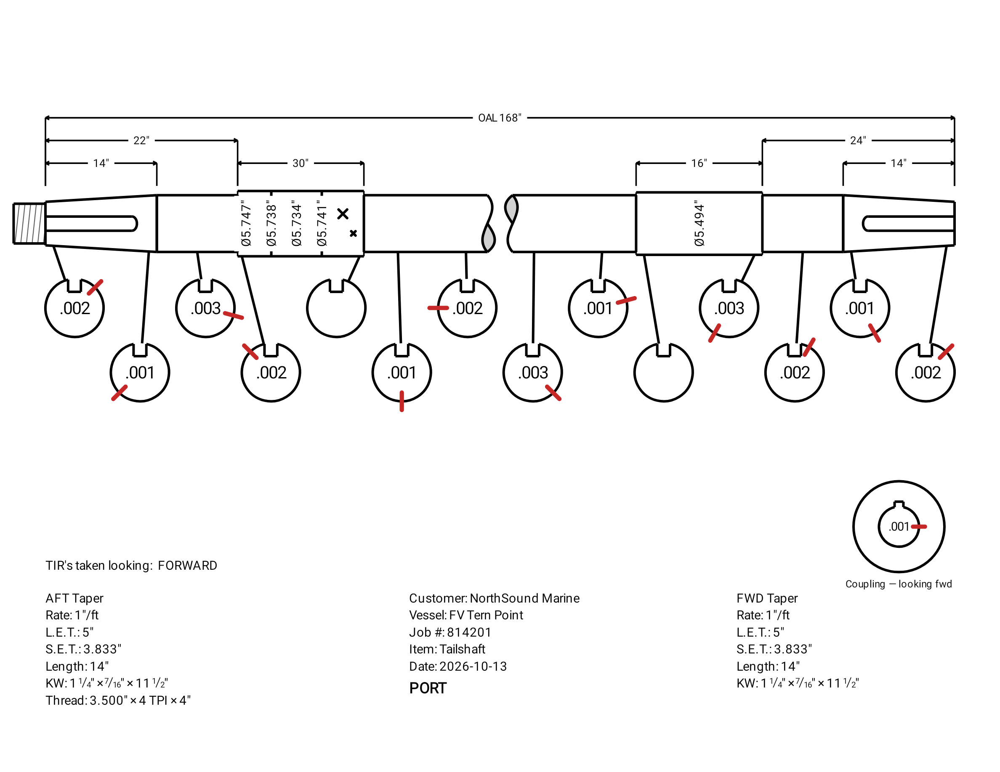
Export all writes the whole document package to one folder in a single step.
A propeller shaft is long and thin: a 25′ shaft drawn to true scale across a sheet of paper would be a pencil line. So the drawing stretches the shaft's height and shortens its long plain runs to fit the page. The printed dimensions are always your typed values, whatever the drawing does to fit.
At 100% (Standard), the drawn height follows a straight line through two settings: a 4″ shaft draws 1/2″ tall and an 8″ shaft draws 1″ tall, so a 6″ shaft draws 3/4″. This is the proportion of a hand-drawn shop sheet. Change it in Settings → Drawing → Default drawing size (4″ shaft draws and 8″ shaft draws, from 1/4″ up to 1 1/2″). A larger shaft never draws smaller than a smaller one.
Shaft height picks the drawn height directly, in inches on paper, from 1/2″ to 1 1/2″. Both limits are paper measurements. Shrink a large shaft to uncramp a crowded schematic, or grow one for more room to write in. A small shaft whose standard height is already under 1/2″ is never enlarged by the lower limit.
To fit the page, long body runs are drawn shorter than true length. When a run is shortened below the Body S-break setting (half its true length by default), it prints the S-break symbol, the conventional sign that a length is not drawn to scale. Milder shortening prints a plain outline. A body run long enough to fill a large part of the page always breaks, even with the setting at Never. The S-break itself is the notice; no footer note repeats it.
Liners and tapers are what an inspection measures, so they get special treatment.
The original schematic records the shaft as it came in. The Final schematic is the drawing the shaft leaves with, after the wear and undercut work has moved, lengthened or shortened a liner. The two are the before and the after of the same job, saved in the same job file.
The Final drawing starts as an exact copy of the original. From then on the two are independent: edit the Final with the same cards, Add dialogs and OAL field as the Schematic tab, and nothing you change on one ever reaches the other. Moving a liner on the original later does not move it on the Final. Per-component print units apply to both drawings.
Open the ⋮ menu on the Final banner:
Both can be undone with the editor's Undo, like any other drawing edit.
| Sheet | How to produce it | Use |
|---|---|---|
| Final schematic | PDF preview icon → Final PDF Preview → Print or Export PDF | The welding and machining copy, with the liner positions updated. |
| Final schematic with Runout bubbles | Same preview; tick the Runout bubbles chip in its options panel | The pre-ship measurement sheet: a Schematic + Runout sheet over the Final geometry, with empty bubbles at the default station counts. Ø callouts and Template mode don't apply to it. The chip is off each time the app starts. |
| Final runout sheet | Banner ⋮ → Print final runout sheet or Export final runout sheet… | A blank classic runout sheet over the Final geometry, with no readings and default stations, for taking the final runouts before the job ships. It follows the job's Shaft height and compression settings. It has no preview. |
Every Final sheet is marked so it can never be handed out as the original: “Drawing: Final” in the footer job block (or the runout sheet's header), a bold FINAL stamp beside the side stamp, and _Final, _Final_Runout or _Final_RunoutSheet in the file and print job name (see Reading the Printed Sheets).
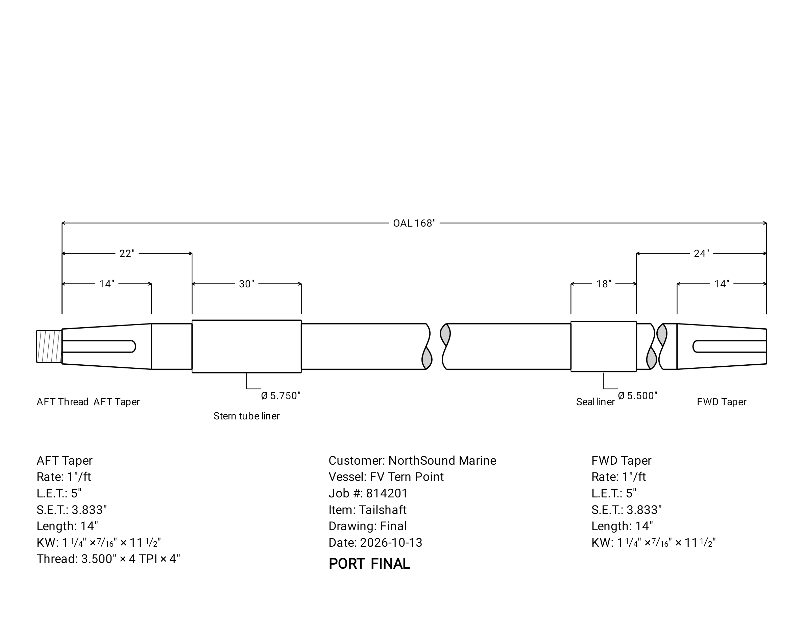
If the Final drawing has overlapping components, the final runout sheet is blocked with the dialog Cannot print final runout sheet. Fix the overlap on the Final tab.
A drawing profile saves the whole drawing look under a name, so you can switch the whole shop's sheets between, say, a “Customer” look and a “Floor copy” look in one tap. Profiles live in Settings → Drawing → Profiles.
A profile is a one-shot copy into this device's settings, nothing more. The app doesn't track which profile is “active”, and a job never remembers which profile drew it. Reopening a job prints it in whatever look the device has now. A profile applied on one tablet does not reach another tablet.
| Captured | Not captured |
|---|---|
| Line thickness · Body S-break · Default drawing size · Dimension arrows · Fractions · Output font · Dual-unit layout · Thread slant and density · Bubble size and height · Shade in Components (Bodies, Explicit bodies only, Tapers, Liners) · Undercut drawing line art, liner outline and split cuts at liner edges · Component names on drawing · Measurement reference · Wear trace depth default · Wear area shade · Taper–liner join | Per-job settings (Shaft height, liner and taper compression, coupling face, wear strip choices) · Dual units on a document and the Dual-unit display switch · Which controls exist (Per-component units, Liner shoulders, Unit converter in Add dialogs) · Template mode · Open PDF after export · Theme, preview colors and on-screen undercut styles |
A guided tour of every sheet ShaftSchematic prints — the schematic, the runout sheet, the consolidated sheet, the wear and undercut records, the Final schematic and the blank write-in drafts — for the machinist and foreman holding the paper. Every figure in this chapter is a real sheet, produced by the app's own print engine.
Every sheet is printed landscape, with the AFT end of the shaft on the left and the FWD end on the right. The wear and undercut records spell it out with “← AFT” and “FWD →” above the drawing; the schematic and runout sheets follow the same rule without the label. A taper on the left of the page is always the AFT taper.
A 168″ tailshaft has to fit across a sheet of paper, so the drawing is not to scale. Bare shaft and long body runs give up the most length, and a run shortened past a set point carries an S-break pair (see S-breaks). Liners and tapers are shortened less, never with a break symbol, and a longer taper always draws longer than a shorter one. Keyways stay in proportion to the drawn shaft, and a bigger diameter always draws taller.
The dimensions, callouts and footer always print the true values. Never scale a length off the paper — read the number.
Every value is printed exactly as the office typed it (see What you type is what prints). The sheet only chooses how to write the value out:
| Kind of value | How it prints | Example |
|---|---|---|
| Length, inches | Whole numbers bare; a value that lands on a sixteenth as a fraction; anything else to three decimals. | 14″ · 11 1/2″ · 2 1/2″ |
| Diameter, inches | Whole numbers bare; every other value at exactly three decimals. | Ø 8″ · Ø 5.750″ · 3.833″ |
| Millimeters | Dimension rails to three decimals; footer lines and Ø callouts to one decimal, trailing zero dropped. Always with the unit. | 38.1 mm |
| Runout (TIR) | Thousandths, leading zero dropped, the way a TIR (total indicated runout) is hand-written. | .001 · .002 · .010 |
Fractions are set as built-up fractions. The standard style is diagonal: a small raised numerator, a slanted bar and the denominator on the line, as in the KW (keyway) line “KW: 1 1/4″ × 7/16″ × 11 1/2″” on the schematic below. The office can switch every sheet to stacked fractions (numerator over denominator, the shop-ruler look) or plain ones (3/16 on one line) under Settings → Drawing → Fractions. Dates and job numbers are never turned into fractions.
The editor's on-screen colors, the highlight on a selected component, overlap warnings and the app's light or dark theme never reach a sheet. Paper is black ink on white, with light grey shading where the office has turned it on and one exception: the high-spot marks on the runout sheets print red. Grey shading on a body, taper or liner is a look, not a feature — it says nothing about material or finish.
The schematic is the master drawing of the shaft: every component, its dimensions, the diameters that matter and the taper, keyway and thread specification in the title block. The sheet below is a complete schematic of a 168″ tailshaft for the FV Tern Point.
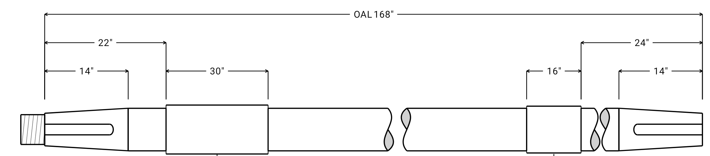
The dimensions sit in rows — rails — above the shaft.
How a dimension is drawn:
A liner is located by a datum dimension from an S.E.T. to the liner's near edge, then sized by a length dimension across the liner. By default each liner is measured from whichever S.E.T. is closer:
A liner that starts right at an S.E.T. needs no datum, so it prints only its length.
The office can instead quote every liner from one end, with the Measurement reference setting (AFT (force AFT SET) or FWD (force FWD SET); see PDF Export Options). The sheet then switches to baseline dimensioning: the datum still reads the distance from that S.E.T. to the liner's near edge, but the second number becomes the running distance from the same S.E.T. to the liner's far edge. On the tailshaft above, forced to AFT, the Stern tube liner would read 22″ and 52″ instead of 22″ and 30″.
Diameters that matter on the floor hang below the shaft, each on an L-shaped leader that touches the component it belongs to: “Ø 5.750″” for the Stern tube liner, “Ø 5.500″” for the Seal liner. When two callouts would crowd each other, one drops to a second row.
Names such as “AFT Taper”, “Stern tube liner” and “Seal liner” print below the shaft, under their own component. A name slides along its component, or drops to a lower row, to stay clear of a Ø callout — so on the tailshaft “Stern tube liner” sits a row below “AFT Thread AFT Taper”, and “Seal liner” sits beside its callout. A name always lies somewhere over its own component. Which components print a name is the office's choice.
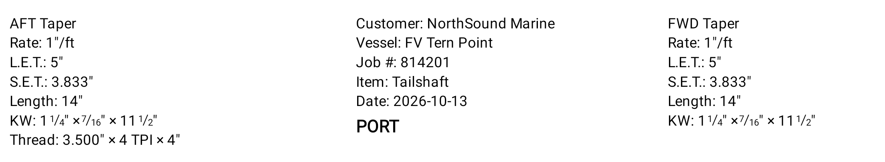
The footer runs in three columns: everything about the AFT end on the left, the job in the middle, everything about the FWD end on the right.
| Line | What it means |
|---|---|
| “AFT Taper” / “FWD Taper” | Column heading. A shaft end without a taper has no heading. |
| “Rate:” | The taper. On inch sheets a 1:12 taper prints as “1″/ft” and a 1:16 taper as “3/4″/ft”; any other rate prints as it was typed (a taper left in Auto prints its computed ratio). |
| “L.E.T.:” | Diameter at the L.E.T. (large end of taper). |
| “S.E.T.:” | Diameter at the small end of the taper. |
| “Length:” | Taper length. |
| “KW:” | Taper keyway, width × depth × length. |
| “Thread:” | Major Ø × threads per inch × length (a metric thread prints its designation × length). |
| “Customer:” “Vessel:” “Job #:” “Item:” “Date:” | The job. Item prints only when the office filled it in. The date is the day the sheet was printed. |
| “Body:” | The diameters of the bodies the office drew as their own components (not bare shaft), smallest first. |
| Side badge | “PORT”, “STBD” (starboard) or “CENTER”, in bold under the job block. |
Extra lines appear when the shaft has the feature. Each prints in the column for the half of the shaft the feature sits in:
| Line | When it appears |
|---|---|
| “(spooned)” after the KW line, plus “KW length to base of spoon (mill end)” | A spooned open keyway. |
| “Captured KW: inset … from S.E.T.” (taper) or “… from AFT” / “… from FWD” (body) | A captured keyway: the distance from that face to the start of the slot. |
| “Body KW:” | A keyway in a body, width × depth × length. |
| “Keyways 180° apart”, “Keyways 90° apart (CW from aft)”, “Keyways 90° apart (CCW from aft)” | Two or more keyways with a set clocking (middle column). |
| “Thread relief:” | A relieved thread: relief length × relief Ø, directly under its Thread line. |
| “Liner shoulder R:” | One line per shouldered liner: the radius once when both ends match, “AFT r, FWD r” when they differ; the liner's name leads the line when more than one liner is shouldered. |
| “Bolt hole:”, “Hole center from FWD:” / “from AFT:”, “90° from keyway” / “In line with keyway” | A cross-drilled coupling bolt hole (see Coupler bolt holes). |
An S-break pair cut into a body run means the run is drawn much shorter than true. The run's real length comes from the dimensions around it, never from the paper. Some things to know:
The sheet below is a second shaft — a 180″ line shaft for the MV Halyard Point — carrying most of the features the app can draw. The close-ups that follow show how each one looks and what the footer says about it.
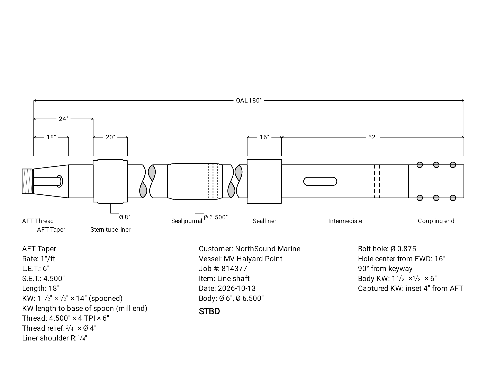
A thread draws as a rectangle at its major diameter filled with slanted hatch lines. The hatch is a symbol: its lean suggests the pitch, but the lines are not a thread count. Read the size from the footer's “Thread:” line — “Thread: 3.500″ × 4 TPI × 4″” is a 3 1/2″ major diameter, 4 TPI (threads per inch), 4″ long. A thread excluded from the overall length sits outside the OAL bracket.
A relief groove draws as a short, narrower, unhatched step at the end where the thread runs up to its shoulder. The relief is part of the thread's length, not added to it. The footer states it directly under the thread: “Thread relief: 3/4″ × Ø 4″” means a groove 3/4″ long, cut to Ø 4″.
A keyway is drawn face-on, as a slot inside the taper or body outline. Its size is in the footer — “KW:” for a taper, “Body KW:” for a body — always width × depth × length. There are three forms:
Clocking. When a shaft has two or more keyways and the office has set how they are clocked, the AFT-most keyway draws face-on and the other draws as you would see it from the same side:
A shaft with one keyway, or keyways with no clocking set, prints no clocking note.
A shouldered liner steps down to a smaller diameter for a short length at its end, with a rounded corner at the step. The step is drawn to the sheet's scale; the corner radius is the one value the sheet prints, as one footer line per liner — “Liner shoulder R: 1/4″”, or “Liner shoulder R: AFT 1/4″, FWD 3/8″” when the two ends differ. Shoulders appear only on jobs where the office uses them; they are switched on in Settings.
The runout sheet is the shaft outline with a bubble for every place a TIR is taken. The sheet below is the classic runout sheet for the Tern Point tailshaft with readings recorded.
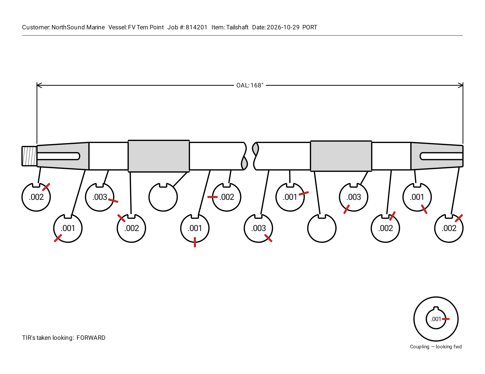
1 2 3 4 5 6 7 8 9 10 11The classic sheet has a one-line job header and the OAL, and nothing else from the schematic: no rails, no callouts, no footer. It is the sheet you take to the lathe. The same bubbles also print on the consolidated sheet, together with the full dimensions (see The consolidated sheet).
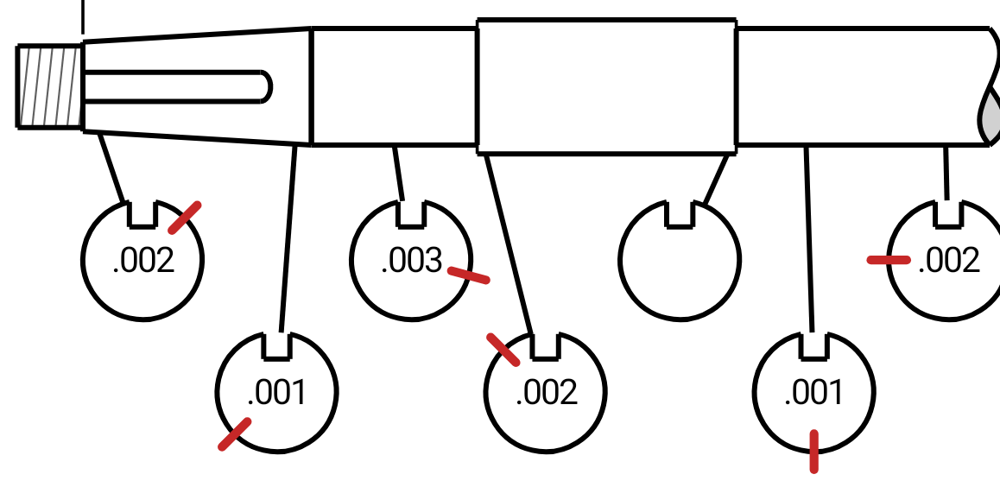
Each bubble is one station — one place on the shaft where an indicator reading is taken. A leader line runs from the station on the shaft surface to the bubble's rim. Bubbles never touch and leaders never cross, so every bubble traces back to one spot. The bubble's position in its row means nothing; where its leader meets the shaft is the station.
By default, tapers get two stations set in 1″ from each end, liners one per 20″ (at least two, inset the same way), bodies and bare shaft one per 20″ spaced evenly, and threads none. A body split into pieces by a liner or taper is still one body, numbered straight through (see Stations and bubbles). Stations can be added, removed or dragged, so a sheet may differ from these defaults. The sheet carries no station dimensions: the leader shows where the reading belongs along the component.
The recorded TIR prints in the middle of the bubble in thousandths with the leading zero dropped: “.002”. Every value on the sheet carries the same three decimals, so “.010” stays “.010”. An empty bubble has no reading recorded yet — it is the place to write one.
Every bubble is a picture of the shaft's cross-section at that station, seen looking in the direction printed on the “TIR's taken looking:” line.
In the close-up above, the first bubble on the AFT taper reads .002 with its tick at upper right — half past one. The second-row .001 under the bare shaft beyond the Stern tube liner has its tick straight down — 6 o'clock — and the .002 just to its right has its tick on the left — 9 o'clock.
The viewing direction prints at the bottom left: “TIR's taken looking: FORWARD” means the clock faces are drawn as seen standing aft of the station looking toward the bow; “AFT” means the reverse. When the office has not set a direction the line prints a blank to write it in. Write it in before you record a single high spot: the same tick means opposite sides of the shaft depending on which way you were looking.
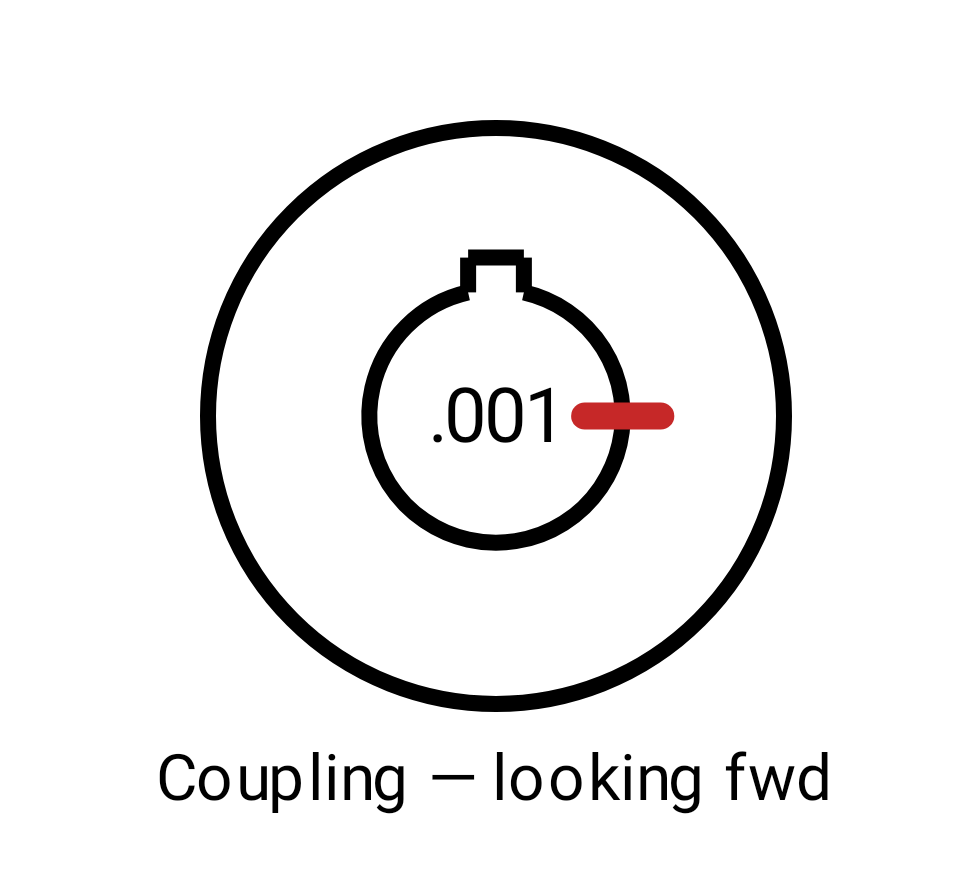
When the office includes it, the coupling end view prints at the bottom right of the sheet:
The consolidated sheet puts the whole inspection on one page: the schematic's dimension rails and footer, the runout bubbles, and the wear information drawn right on the shaft.
It comes in three versions, chosen by the office:
| Version | What prints |
|---|---|
| All three | Dimensions and footer, runout bubbles with the TIR line (and the coupling face when the office includes it), and the wear information. The standard version. |
| Schematic + Runout | Dimensions and footer with the bubbles. No wear marks. |
| Schematic + Wear | Dimensions and footer with the wear information. No bubbles, no TIR line, no coupling face. |
The rails, footer and bubbles read exactly as on the schematic and the runout sheet. What is new is the wear information on the profile:
The wear document — titled “WEAR / INSPECTION RECORD” — is the inspection form for the shaft's wearing surfaces: where the wear is, how deep it is, where the pits are, and the dye pen result.
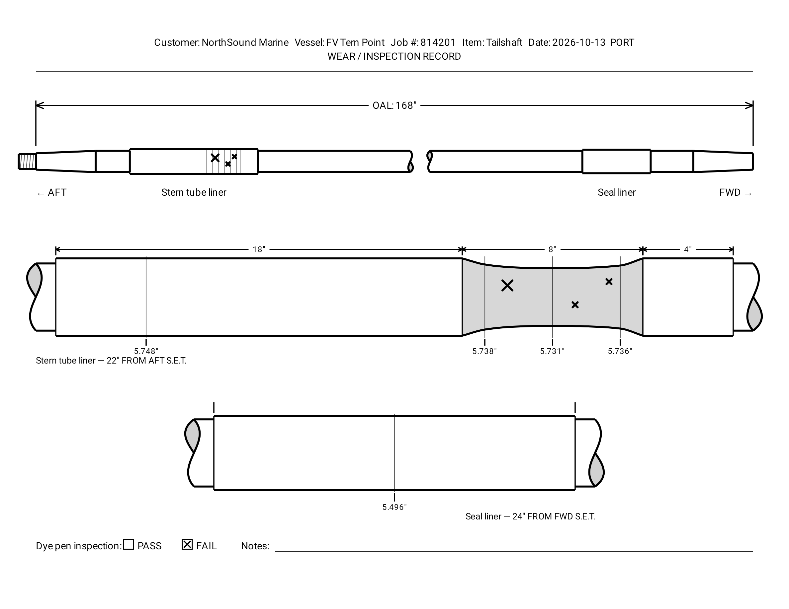
1 2 3 4 5 6 7 8 9 10 11At the top is the whole shaft as a simple outline, with the OAL line and the liner names. It is simplified on purpose: faces are square, and keyways, thread reliefs and blends are left off, because this sheet is about surfaces, not machining. Wear bands show on the profile as a set of fine vertical lines across the liner, and pits as X marks.
Below the profile, each liner gets a zoomed detail strip — every liner, as standard, whether or not it has wear. The office can add strips for tapers and bodies too. Each strip shows the whole liner with a sliver of the shaft beyond each end.
Each measured diameter prints below the strip on a leader to a tick at its station: “5.748″”, “5.738″”, “5.731″”, “5.736″”. Values print with their unit and no Ø sign; crowded values step onto a second row with a dog-leg leader. A diameter on a component with no strip prints under the profile instead.
Inside a wear band, the liner's surface line dips through the measured diameters, so the shape of the wear can be seen at a glance. Real wear is a few thousandths and would be invisible at true scale, so the trace is drawn deeper than true: the deepest reading on the sheet draws at a set fraction of the liner's drawn radius (25% by default). A trace is never drawn shallower than true. The drawn depth is for the eye; the printed numbers are the measurements.
Each pit or dye-pen failure prints as an X where it was found. There are two sizes: a large X for a bigger cavity and a small x for a small pit or hole. The size is a symbol, not the pit's real size. An X's height across the liner only shows roughly where it was seen; it is not a clock position.
The bottom line reads “Dye pen inspection:” with a “PASS” box and a “FAIL” box. An X in a box is the recorded result; both boxes empty means the result has not been recorded — mark it by hand. The “Notes:” rule is for anything else.
The undercut drawing — titled “UNDERCUT RECORD” — records every section machined below the surface: where each cut starts, how long it is and the diameter it was taken to.
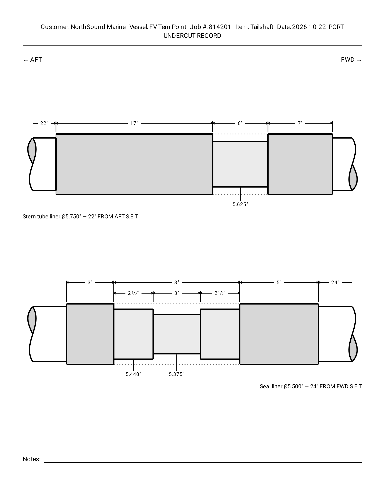
There is no whole-shaft view. Below the header and the “← AFT” / “FWD →” row, each liner holding a cut gets its own strip showing the whole liner and a sliver of shaft beyond each end. Cuts on bare shaft get a strip around the cut.
A wide relief with a smaller, deeper cut inside it — a corroded patch taken down further — draws as a stair: the inner cut steps down from the outer cut's floor. The Seal liner above has an 8″ cut to “5.440″” holding a 3″ cut to “5.375″”. The inner cut gets its own rail row under the main one, measured from the outer cut's edges: 2 1/2″, 3″, 2 1/2″. When the inner cut runs right up to the outer cut's end, the shared end prints as one continuous face.
The “Notes:” rule at the bottom is for anything the drawing doesn't say.
A job can carry two schematics. The original is the shaft as it came in; it is the drawing the runout, wear and undercut records refer to. The Final is the shaft as it leaves, after the work — a liner renewed, moved, lengthened or shortened. The two are independent drawings: changing one never changes the other.
An original sheet carries none of these marks.
On this Final the Seal liner has been renewed at 18″ instead of 16″. Its FWD edge did not move, so its datum still reads 24″ from the FWD S.E.T., and only its length changed. Everything else matches the original.
A blank draft is a sheet with the drawing kept and the values taken out, for filling in by hand — a fresh inspection form, or a layout reused for a similar shaft. Its file name ends in “_BlankDraft”. Blanking happens only on the paper: nothing recorded in the app is erased.
What stays printed: the whole drawing, every extension and dimension line, the component names, the keyways and every footer label. Where to write:
A keyway clocking note still prints, since it describes the drawing rather than a measured value. A thread relief line does not.
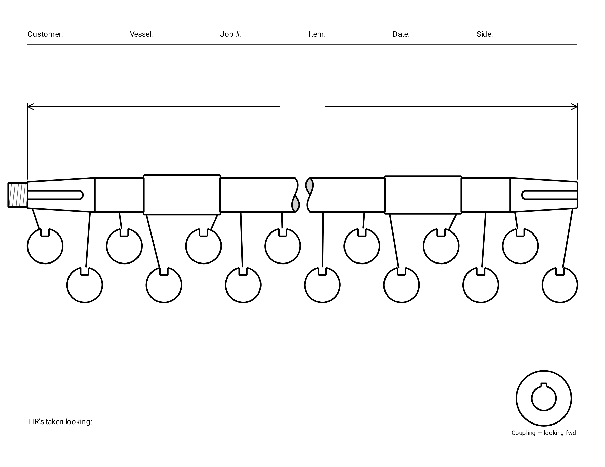
How to type runout readings, wear marks, measured diameters, undercut sections and worn sections into a job on a tablet or phone at the lathe, and how to work from blank paper sheets when the tablet stays in the office. This chapter is written for the machinist and foreman doing the measuring.
Every measurement belongs to a job that already has its shaft drawn. Open the job from the home screen (see The home screen), then open the navigation menu (the menu button at the top left; always visible on a wide tablet) and pick the tab you need:
| Tab | What you record there |
|---|---|
| Runout Sheet | TIR (total indicated runout) readings and high-spot clock positions, one per bubble; the coupling pilot runout; station counts and bubble positions. |
| Wear Document | Wear spots on liners, pit and dye-failure X marks, measured diameters, the dye pen PASS/FAIL result. |
| Undercut Drawing | Undercut sections: distance, length and measured Ø of each machined-below-surface span. |
| Consolidated Output | Worn sections: measured areas whose Ø values print inside the shaft on the consolidated sheet. |
These tabs stay greyed out until the shaft is built — it needs at least one component and an overall length. If a tab won't open, the office has not finished the drawing yet.
Everything in this chapter is a reference mark laid over the drawing (see Reference marks never change the shaft). You cannot damage the drawing by recording measurements, and the office cannot lose your readings by tidying up the drawing.
Readings live inside the job file, next to the shaft. While you have unsaved work the job name at the top of the tab shows an asterisk (*). Tap the Save icon in the tab's toolbar to save; a job that has never been saved asks for a name first.
A runout reading belongs to its bubble — this component, this station number — not to a spot on the paper. If the office later edits the shaft, the reading follows its bubble. If an edit removes the station altogether (the component is deleted, or its station count is lowered), the reading is simply not drawn; it is not thrown away, and it reappears if the station comes back. Pits and measured diameters behave the same way with their component.
Typed readings, bubble moves, station count changes, wear marks, undercuts and worn sections all go into the job's single undo history. To undo, use the Undo and Redo arrows in the bar at the top of the Undercuts tab or of a liner's page, or the History icon on the Schematic tab's toolbar; see Undo and redo. Deleting a cut from its card also offers Undo in a message at the bottom of the page. The Runout Sheet tab also has its own one-tap Undo move for the last bubble you dragged — see Moving bubbles.
From top to bottom on a phone:
A station is one indicator position on a component. Its bubble is the circle hanging below the shaft where the reading is written; the notch at the top of every bubble is the keyway, so the clock position of the high spot reads from the key. Stations are laid out automatically, by component length:
| Component | Default stations | Placement |
|---|---|---|
| Body (including bare-shaft sections) | One per 20″ of length, at least 1 | Spread evenly along the body as drawn |
| Liner | One per 20″ of length, at least 2 | The end stations are set in 1″ from each edge |
| Taper | Always 2 | Set in 1″ from each end |
| Thread | None | Threads are not measured for runout |
Stations on liners and tapers are set in from the edges because the geometry changes at an edge and an indicator reads unreliably there. The automatic count stops at 10 stations per component; you can go higher by hand.
A body that is split by liners or tapers still counts as one body: its stations are worked out once from its total length, shared across the pieces, and numbered straight through from AFT to FWD. A short leftover piece next to a liner gets no bubble of its own.
The value and the high spot are independent: save a value with no high spot, or a high spot with no value. Until a high spot is set the dialog reads No high spot set. Only touches on the ring move the marker — the middle of the circle is the value field, and touches well outside the rim are ignored.
The reading appears in the bubble on the preview at once, with the high spot as a short red dash across the rim. Tap the bubble again at any time to change it.
Under TIR orientation, tap Looking AFT or Looking FORWARD for the direction you stood when reading the indicator; the chosen button is filled. The sheet prints the choice on its bottom line, “TIR's taken looking: AFT” or “TIR's taken looking: FORWARD”, so whoever reads the high-spot marks knows which way round they are. Not set (the default) prints a blank write-in line instead.
Scroll to Measurement stations at the bottom of the tab. Each body, taper and liner has a row, AFT to FWD, showing its current count between a − and a +. Bare-shaft sections are listed as Body (auto). The preview above updates as you tap.
The same rows appear on the Consolidated Output tab under Runout bubbles (tap the heading to expand them), so you can adjust counts while looking at the consolidated sheet. Both places change the same counts.
Sometimes a station has to sit where the indicator can actually reach — clear of a bearing, a flange or a pit. To move a bubble:
After a drag, an Undo move button appears beside the hint under the preview. One tap puts that bubble back exactly where it was before the drag — if it had never been moved, back to automatic placement.
The rules a moved bubble follows:
A row in Measurement stations whose bubbles have been moved shows a Reset button in place of the word Stations:. Reset returns that component's bubbles to automatic placement; Reset all bubble positions under the rows does it for every component. Both can be undone from the History menu.
When you are arranging several bubbles, press-and-hold gets slow. Move mode turns the preview into an arranging surface:
In Move mode a tap never opens the reading dialog, and pinch-zoom still works from bare paper. The same movement rules apply as for a press-and-hold drag, and Undo move still appears after each drag. The − / + buttons are the same as the station rows; undo them from the History menu.
The sheet can carry the coupling end view the shops hand-sketch in the corner, with the pilot runout written inside the bore (see The runout sheet).
The coupling face is a per-job choice: one job may measure the coupling and the next may not. The same setting appears as a Coupling face chip on the runout preview's options and as a switch on the Consolidated Output tab — all three change the same thing. The number of bolt holes comes from the shaft's first coupler bolt slot; a shaft with none draws the plain two-circle face.
The Runout Sheet tab produces the classic runout sheet: shaft outline, OAL (overall length), bubbles and readings, the TIR direction line and, if ticked, the coupling face.
If a print button is greyed out, a red message above it explains what in the drawing needs fixing first. The consolidated sheet is printed from the Consolidated Output tab. The preview's options (shaft height, bubble size and height, and the rest) are covered in The PDF options panel; how to read each sheet is in Reading the Printed Sheets.
The tab shows the shaft with every body, taper and liner tinted as a tap target. A small number badge above a component counts the wear spots and pits already recorded on it. Under the drawing the hint reads Tap a body, taper, or liner to inspect wear and mark pits. Below that are the Blank draft (write-in) switch and the Print Wear Document, Preview Wear Document and Export Wear Document PDF buttons, then the per-job options: Trace depth exaggeration, Dye pen inspection: and Components.
What you can record depends on the component:
| Component | Pits (X marks) | Measured Ø | Wear spots |
|---|---|---|---|
| Liner | Yes | Yes (also drives the worn-profile trace) | Yes |
| Taper | Yes | Yes | No |
| Body or bare shaft | Yes | Yes | No |
The machinist's convention is an X on the sketch: a small X for a small pit or hole, a larger X for a bigger cavity. The size is a symbol, not a measurement of the pit.
To take one off, choose Remove X and tap the X; a tap that misses does nothing. Clear all pits removes every X on this component. The heading counts them, for example 3 placed.
The station draws as a thin tick across the component with the value below it on a leader line, exactly as it will print. Save stays greyed out until the field holds a value above zero, and Cancel leaves nothing behind.
Only one tool is active at a time across the Pits and Diameter measurements sections, so a tap can't place an X and a reading at once. The heading counts the readings, for example 4 recorded.
A wear spot is a band along a liner where it is worn. It prints as a shaded band on the liner's detail strip, dimensioned from the liner's edge, and it is where the worn-profile trace dips.
With an AFT datum (AFT SET, Liner AFT) the distance locates the band's AFT edge, measured forward. With a FWD datum (FWD SET, Liner FWD) it locates the band's FWD edge, measured aft. Switching the chip only changes how the distance is shown — the band itself does not move — so you can enter it from one datum and check it from another.
Values commit when you leave the field, exactly as typed. A band should fit inside the liner; a value that pushes it past either end stays in the field and the card says so under it (Wear spot extends past the liner's FWD edge), the card's header carries a short note, and the drawing shows the band clipped to the liner until you correct it. If the liner is later shortened so that an existing band runs past its end, the card shows Extends past liner end — re-measure. Delete a band with the bin icon on its card.
When a liner has measured diameters inside a wear spot, the liner's surface line on the detail strip dips through those diameters, so the sheet shows the shape of the wear, not just its numbers. The detail view on screen draws the same trace as the printed strip.
Real wear is a few thousandths on a 6″ liner — far too shallow to see at drawing scale — so the dip is drawn deeper than true. Trace depth exaggeration on the Wear Document tab sets how deep the deepest wear on the job draws, as a percentage of the liner radius, from 5% to 25%; shallower wear draws in proportion to it. The default is 25%. Wear that is deeper than the setting keeps its true proportion — the trace is never drawn shallower than the real wear.
Next to Dye pen inspection:, tap Pass or Fail. The sheet prints an X in that box on its bottom line; the other box stays blank. Tap the selected chip again to clear it and leave both boxes blank for marking by hand.
By default every liner gets a broken-out detail strip on the printed wear document. To give a taper or body its own strip (so its pits and readings print large), tick it under Components on the Wear Document tab. Default (all liners), All and None set the list in one tap; Complete shaft and Compact strips change the sheet's layout. The full set of layout options is described in The PDF options panel. You can record pits and diameters on any body, taper or liner whether or not it has a strip; without one, they print on the whole-shaft drawing.
An undercut is a span machined below the surface — a weld-repair undercut, a cleanup cut under a liner. You record where it is, how long it is and the diameter it was cut to. The app draws each cut as a stepped section in the profile and prints it on its own zoomed detail view with chained dimensions.
Undercuts are measured along the shaft, not tied to a component: a cut may run under a liner edge or span two components.
The drawing previews every change as you type, but nothing enters the job until it is confirmed. The pill tells you where you stand:
You do not have to tap the pill every time. Swiping to another card, tapping another cut on the drawing, or leaving the detail view saves a card whose changes are valid. If a card's changes cannot be saved, the app asks first — Undercut can't be saved, with the reason — and you choose Keep editing or Discard. Tapping outside the question keeps editing, so a stray tap never loses work.
Swipe left and right through the cards (Cut 1 of 3, and so on), or tap a cut on the drawing to jump to its card. The number is the cut's position on the strip from AFT to FWD, not the order you added it, so a cut added between two others reads as 2 of 3; the detail page and the tab's list number cuts the same way across the whole shaft, and the detail page shows each cut's number inside its section — a cut that a nested cut splits in two shows its number on each piece, so they read as one section — to help you match the drawing to the cards and the list. The numbers never print on a sheet. A liner's page is titled with the liner's name and outside diameter, for example FWD Liner Ø10.000". Delete a recorded cut with the bin icon on its card; a Undercut deleted message with Undo follows, and the Undo and Redo arrows in the bar at the top of this page (and of the Undercuts tab) step the job's whole edit history, cuts included. Pinch to zoom the drawing for a closer look; double-tap it, or tap the round button that appears in its corner, to go back to the full view. A dimension too short to hold its value has the value set just above or below its line, with a thin leader to the line it belongs to; Dimension arrows in the options sets the arrowhead size here and on the printed sheet.
While a card's changes are blocked for overlapping another cut, the overlapping stretch itself is painted on the drawing in the warning colour, edge to edge, so you can see exactly where the two cuts cross.
Three shortcuts set a cut's span without measuring it by hand. They sit in More ways to place this cut, a row at the foot of the card below Next cut that is closed until you tap it (it opens by itself for a cut that is already a whole liner or runs past a liner edge, and stays open while a gap field is showing). It appears only when the page has a liner to span against or another cut to butt against, and closing it loses nothing you typed. Each one is applied the moment you tap or type it, and the Distance and Length fields update to show the result; nothing changes on its own afterwards.
| Chip | The distance runs… |
|---|---|
| AFT S.E.T. | forward from the AFT S.E.T. to the cut's AFT end |
| FWD S.E.T. | aft from the FWD S.E.T. to the cut's FWD end |
| Liner AFT | forward from the liner's AFT edge to the cut's AFT end |
| Liner FWD | aft from the liner's FWD edge to the cut's FWD end |
The liner chips appear only when the cut has a liner to measure from, and a liner edge that a cut has run across into the body is no longer offered: one floor runs across it, so there is no step to measure to. That chip is greyed out with Liner AFT edge is cut into the body — measure from a S.E.T., the Distance re-reads from the nearer S.E.T., and a new cut on that liner starts out measured from the S.E.T. A cut that only ends at the edge, or trims the liner's end without crossing it, leaves the step, so the edge stays a datum. On the printed sheet the overhanging cut is dimensioned in two parts, shoulder to liner edge and liner edge onward, so the overhang is located against the liner edge the strip title places from the S.E.T. Two rules keep the cut where you measured it:
A cut must lie on the shaft. The fields never change a value you typed: a distance or length that would put the cut past either end of the shaft stays in the card exactly as entered, drawn to the shaft's end, and the status pill and a note under the fields say why it cannot be saved (Undercut extends past the shaft's FWD end, Length must be greater than zero) until you change it or discard it. Elsewhere in the app a number field that cannot accept a value puts the previous value back and tells you so (20 not applied — …). If the shaft is shortened after a cut is recorded, the cut's card and list row show Extends past shaft end — re-measure.
A nested cut is a smaller, deeper cut inside a wider relief — the shop deepening a corroded patch of an earlier undercut. Record it as its own cut whose span sits entirely inside the wider one; it may run right up to the wider cut's end. The drawing shows it as a second step below the relief's floor, and the dimensions add a row for it.
A nested cut can be located from its parent: once the cut sits fully inside another, Measure From: gains Parent AFT and Parent FWD, the parent's shoulders, which is how the sheet dimensions it. These are the datums to use when the liner's own edges have been cut away. If the parent is later deleted or the cut is moved out of it, the Distance re-reads from the nearer S.E.T.; nothing stored moves.
A faint dotted outline of each liner's original edges and outside diameter is drawn over the cuts, on the screen and on the printed sheet, so a cut that runs from the liner into the body still shows where the liner was. It is the Liner outline switch on the Undercut sheet's options and on the PDF Export Options page in Settings, on by default and app-wide like the other drawing options. The dimensions on the zoomed page are laid out exactly as the printed strip lays them out: the cuts chained along one line, a row under it for a cut nested inside another (measured from that cut's ends), the overall run above, and each value set into a break in its line. The chain of dimensions prints each cut's full length, the way the shop measures it; a cut machined past a liner edge can instead be dimensioned as two spans meeting at the edge with Split cuts at liner edges, beside Liner outline in the same two places and on the Undercut Drawing tab under Drawing settings, and off by default. A cut that touches the liner's cuts, even one lying mostly in the body, belongs to that liner's page, and the zoomed window grows to give it room clear of the break symbols.
A New undercut card you leave without typing anything is simply dropped — the default span is a placeholder, not a cut. Tap Record cut if you really want the default recorded.
A cut that sits partly inside another, or exactly on top of one, is blocked with Overlaps cut 3 — sit fully inside it or fully clear, naming the other cut by its card number (Overlaps a cut outside this strip when it is recorded elsewhere on the shaft), and the overlapping stretch is painted on the drawing. Move it fully inside or fully clear of its neighbor.
Two warnings flag a diameter that looks wrong without changing it: Ø isn't smaller than the shaft here (Ø 7.874 in) — check the number (a cut no smaller than the surface it was cut into; the figure is that surface's diameter), and for a nested cut, Ø isn't smaller than the surrounding cut's floor here (Ø … in) — check the number.
A real undercut is hairline-thin at drawing scale, so its depth is drawn deeper than true. Drawn depth, under Drawing settings below the list on the Undercut Drawing tab, sets how deep the job's deepest cut draws, from 0% (true scale) to 25%; shallower cuts scale to it, and a cut is never drawn shallower than true. The default is 25%. The setting is saved with the job and changes only the drawing — the printed Ø values are always the numbers you typed.
Draw to the shaft end, beside the slider in Drawing settings, is for a liner close to the end of the shaft: when it is on, a liner's detail view whose cuts end within 24″ of the S.E.T. draws out to the end of the shaft with no break symbol, and the chain of dimensions gains the run from the last cut to the S.E.T. — the figure a shop sketch carries. It is saved with the job.
A third switch, Liner outline, sits beside the printed line-art row and draws each liner's original edges as a faint dotted line over the cuts, on by default. Split cuts at liner edges, next to it and off by default, dimensions a cut that runs past a liner edge as two spans meeting at the edge instead of one full length. Two separate switches strip the grey shading from undercut drawings: Line art (no shading) under Settings → Editor Screen → Preview Colors for the screen (see Preview Colors), and Undercut drawing: line art (no shading) for the printed sheet, in Settings → PDF Export Options and the undercut preview's options.
A worn section marks a measured area of the shaft on the consolidated sheet. It prints as boundary lines at each end of the area, with the Ø values you took written inside the shaft profile, turned on end, each on a white patch so no drawing line runs through a number.
Empty Ø fields are dropped when you save, so you can record the area first and come back with the numbers. The list shows each area as Worn section 1 with a summary such as “12in from AFT S.E.T. · L 8in · 3 Ø” (or “no readings yet”). Tap a row to edit it; the edit dialog adds Delete. As with undercuts, switching the S.E.T. chip re-shows the same area from the other datum without moving it.
When the tablet can't go to the lathe, print a blank draft — the real drawing of this shaft with the values left empty for handwriting. Turn on Blank draft (write-in) on the Runout Sheet, Wear Document, Undercut Drawing or Consolidated Output tab, then print as usual. For the finished shaft, Print final runout sheet in the banner menu on the Final Schematic tab prints a blank runout sheet marked Final. What each blank draft leaves empty is listed in Blank drafts and Template mode, and how to fill one in is shown in Blank drafts.
Every setting the app offers, page by page, in the order Settings shows them: the default, the range, and what each one changes on screen and on paper. Use it to set the app up for your shop, or to find out why a sheet prints the way it does.
Open Settings from any of three places: the Settings button on the home screen, the Settings entry in the navigation menu, or the Settings item in the editor's More options menu. The main page is one long scrolling list divided into sections. Two rows on it open their own pages: PDF Export Options and Preview Colors. The back arrow returns you from either page to the main list.
Everything in Settings is app-wide: it belongs to this tablet or phone, not to a shaft. Change a setting once and every document you open or print follows it. The one exception is Units, which the open document remembers (see below).
Settings fall into two kinds:
A slider in Settings saves when you let go of it, not while you drag. Chips and switches save the moment you tap them. Each slider has a Default (…) or Standard (…) button beside its title; the button greys out while the setting is already at its default.
Settings → Units — the unit every new drawing starts in, and how values are shown and typed in the open document.
| Setting | Default | What it does |
|---|---|---|
| Millimeters | Inches | Millimeters | Every new drawing starts in this unit, so a metric shop sets it once. While a drawing is open the chips also switch it: every field, badge, drawing and printed sheet shows values in the chosen unit. Inch fields accept fractions such as 3 1/2. The choice is saved with the document, so a shaft reopens in the unit it was drawn in, and changing the setting later never flips a saved job. |
To print one component in a different unit from the rest of the shaft — a metric thread on an inch shaft, for example — switch on Per-component units under Drawing (below).
Settings → Appearance — the app's color scheme. Screen-only: drawing sheets and printed PDFs are always white paper with dark ink, whatever you choose here.
| Setting | Default | What it does |
|---|---|---|
| System | Light | Dark | Light | Picks the app theme. System follows the device's own dark-mode setting. Sheet canvases (runout, wear, undercut) stay white in every theme so ink always reads. |
| High contrast | Off | Boosts figure/ground separation for bright sunlight or low-vision use. Works with any of the three themes. |
Settings → Drawing — what every printed sheet looks like. These settings apply to every document; a document never stores its own copy of them. The section opens with component names, runs from shaft size, through the wear document, to lines, threads and text, and ends with four switches that reveal extra controls in the editor.
Component names on drawing (on by default) is the default for every component's Show name on drawing switch. A card that has not been set follows it, and says so under its switch: Following Settings → Drawing → Component names. A card you set yourself keeps its choice either way: switched on there, the name prints even with this off; switched off, it stays hidden even with this on. Turn it off if your drawings normally go out without names and you only name the odd section. The same setting is the Component names chip on the schematic's PDF options.
| Setting | Default | What it does |
|---|---|---|
| Default drawing size: 4″ shaft draws | 0.5″ | How tall a 4″ shaft draws on paper at 100% Shaft height. Slider 0.25″ to 1.5″ in 1/16″ steps. |
| Default drawing size: 8″ shaft draws | 1″ | How tall an 8″ shaft draws. Same range and steps. Every other diameter follows the straight line through the two points; the line under the sliders shows the result live (for example, Example: a 6″ shaft draws 0.75″.). Standard (0.5″ / 1″) restores the standard pair. |
| Body S-break | below 50% | How much a body run must be shortened before it prints the S-break symbol. Slider from Never to Always in 5% steps; the readout shows Never or below 50% (or your value). Default (50%) resets it. Also on the PDF options panel (schematic, runout and consolidated sheets). |
If you set the 8″ value below the 4″ value, a red warning appears and drawings flatten at the 4″ height, because a larger shaft never draws smaller than a smaller one. The per-job Shaft height slider works on top of this default, and a very long body run breaks at every S-break setting, Never included. See Shaft height and compression.
These three shape the wear document's detail strips. They change the drawing only; printed Ø values never change.
| Setting | Default | What it does |
|---|---|---|
| Wear depth exaggeration | 25% | The default for how deep the worn-profile trace draws, as a fraction of the liner radius. Slider 5% to 25% in 1% steps; Default (25%) resets it. A job can set its own value with Trace depth exaggeration, whose Save as default writes back here (see The worn-profile trace). |
| Wear area shade | 16% | Grey of a measured wear area in the detail strips. Slider 5% to 35% in 1% steps. The range stops where a heavier grey would bury the pit marks drawn into the band, printed or by hand. Also on the PDF options panel (wear sheet). |
| Taper–liner join | 3″ | A taper and the liner beside it share one detail strip. This is how much bare shaft may sit between them before the strip breaks the gap instead of drawing it true. Slider 0″ to 12″ in 1/2″ steps (10 mm steps when working in millimeters). At 0 any gap breaks; touching components always draw joined. Also on the PDF options panel (wear sheet). |
| Setting | Default | What it does |
|---|---|---|
| Dimension arrows | Small | Arrowhead size on the dimension rails: Small, Medium or Large. Heads point inward unless the span is too narrow to hold both. A smaller head lets more values sit inside the dimension line. Also on the PDF options panel (schematic and consolidated sheets). |
| Thread slant | 3× | How far the thread hatch leans. It follows each thread's own pitch; 1× is the true crest angle and higher values lean it further so the thread reads at print size. Slider from 1× true to 10× in 0.5× steps; Default (3×) resets it. Restyles the on-screen previews too. Also on the PDF options panel (Thread section, shown when the shaft has a thread). |
| Thread density | 50% | How many of the thread's crests the hatch draws. Slider from Sparse (15%) to 100% true (every crest at true pitch) in 5% steps; Default (50%) resets it. Fine threads stay at a legible minimum spacing. Also on the PDF options panel (Thread section). |
| Output font | Standard | The typeface every printed sheet is set in: Standard, Condensed, Serif or Monospace. Each chip is labeled in its own face. Condensed fits more values inside the dimension line; Monospace lines digits up in columns. Paper only — app screens are unaffected. Settings only; it is not on the PDF options panel. A device that lacks a face prints in Standard. |
| Fractions | Diagonal | How a fraction is set: Stacked (numerator over denominator with a bar, the shop-ruler fraction), Diagonal (raised numerator, slanted divider) or Plain (3/16 on one line). Applies to the on-screen sheets and the printed sheets alike. Also on the PDF options panel (Lines & text section). |
| Dual-unit layout | Inline | How a value printed in both units is set: Inline puts both on one line — 1 1/2″ [38.1 mm]; Stacked puts the second unit under the first. Stacked is about half as wide, so more values sit in the dimension line; a sheet too tight for the taller value falls back to Inline for the whole sheet. Has an effect only on a document with dual units on. Also on the PDF options panel (Units section, greyed out while that document's dual units are off). |
The last four rows in Drawing are switches. Most shops never need the controls behind them, so they stay hidden until you switch them on. Switching one off again only hides the controls — anything you already set with them keeps printing.
| Setting | Default | What it does |
|---|---|---|
| Per-component units | Off | Lets one component print in a different unit from the document. Reveals a Prints in: in | mm chip at the foot of each body, taper, thread and liner card, and a Keyway in: chip with the keyway fields on body and taper cards and in the Add Body and Add Taper dialogs. Prints in: changes printing only — you still type in the document unit. Keyway in: sets the unit you type the keyway in as well as the unit it prints in, so a 20 × 12 mm keyway is entered as millimeters, not as converted decimals. |
| Dual-unit display | Off | Prints both units on the sheets, for example 1 1/2″ [38.1 mm]. Flipping it switches dual units for the document that is open; each saved job reopens with its own choice. To change one job, use the Dual units switch in the Units section of its PDF options panel. |
| Liner shoulders | Off | Reveals the stepped-shoulder fields (length, Ø, edge radius) on the liner card and in the Add Liner dialog. A liner that already has shoulder values keeps its controls and always draws its shoulders, whatever this switch says. See Liner shoulders. |
| Unit converter in Add dialogs | Off | Adds a mm ↔ in converter button to the title of every Add dialog, for converting a value from a print in the other unit before you type it. The Unit converter in the side menu's tools is always available either way. |
Settings → Drawing → Profiles — save the whole drawing look under a name and switch between looks in one tap. App-wide, like the settings they hold.
Type a Profile name and tap Save (it reads Update when the name exists) to keep the current look; tap Apply beside a profile to copy it back into your settings; use ⋮ → Rename… / Delete… to manage it. Restore Drawing defaults puts every setting a profile stores back to its new-install value, after the Restore Drawing defaults? confirmation. Up to 20 profiles, names up to 40 characters. What a profile captures, and why per-job values stay out, is in Drawing profiles.
Settings → Editor Screen — how the editor and its preview look. Everything here is screen-only except Line Thickness, which also prints.
| Setting | Default | What it does |
|---|---|---|
| Line Thickness | 100% | Line weight on the preview and on every printed sheet. Slider 50% to 200%, with a typed % box beside it and a Default (100%) button. 100% is the standard thin weight; 200% the heavier original weight. Letting go of the slider near 100% snaps exactly to it; a number you type is used exactly as typed (limited to 50–200). Also on the PDF options panel (Lines & text section). |
| Preview Colors | — | Opens the Preview Colors page (below). |
| Show Grid in Preview | Off | Draws a background grid behind the shaft in the editor preview. Never printed. |
| Highlight Selected Component in Preview | On | Highlights the component whose card you are editing, so you can see which part of the shaft you are changing. |
| Show Left/Right Arrows on Component Cards | Off | Adds arrow buttons at the edges of the component cards for stepping from one component to the next, as an alternative to swiping. |
| Small | Medium | Large | Medium | Size of those arrow buttons. Selectable only while the arrows switch is on. |
Settings → Editor Screen → Preview Colors — the colors of the editor preview and the on-screen Undercut Drawing. Screen-only: the page header reads Applies to Preview only, and printed sheets keep their standard black-ink drawing.
| Setting | Default | What it does |
|---|---|---|
| Black/White Only | Off | Turns every fill off and forces outlines to black. The color rows below are disabled while it is on. |
| Outline | Steel | Color of every component outline. |
| Body Fill | Transparent | Fill inside bodies. |
| Taper Fill | Steel | Fill inside tapers. |
| Liner Fill | Bronze | Fill inside liners. |
| Thread Fill | Transparent | Fill behind the thread hatch. |
| Thread Hatch | Steel | Color of the thread hatch lines. |
Each color row has a button that offers Stainless, Steel, Bronze, Transparent or Custom. Choosing Custom adds a Palette button with exact shades: Transparent, Monochrome, Primary, Secondary, Tertiary, Surface Variant, Outline, On Surface and Error. The presets follow the app theme, so they stay readable in light and dark.
Styles the on-screen Undercut Drawing tab only. The printed undercut sheet has its own line-art setting on the PDF Export Options page.
| Setting | Default | What it does |
|---|---|---|
| Line art (no shading) | Off | Everything draws white with black outlines only. The two rows below are disabled while it is on. |
| Shade color | Grey | Grey, Bronze or Blue shading for liners, bodies and the cut sections. |
| Shade intensity | Standard | Light, Standard or Dark. At every intensity the cut section's core shades one step lighter than the liner, so the cut always stands out from the liner around it. |
Settings → PDF Export Options — printing choices that apply to every document you export, print or share. The page opens from the PDF Export Options row on the main list, just above Drawing.
| Setting | Default | What it does |
|---|---|---|
| Open PDF after export | Off | Opens the finished file in your PDF viewer as soon as it is written. |
| Shade in Components: Bodies | Off | Fills bodies with light grey instead of leaving them outlined. Also on the PDF options panel (Shade in Components section). |
| Explicit bodies only | Off | Under Bodies. Shades only the body sections you added; auto (bare-shaft) sections stay unshaded. Works only while Bodies is checked. Also on the PDF options panel, except on the wear and undercut sheets, which shade every body the same way. |
| Tapers | Off | Fills tapers with light grey. Also on the PDF options panel. |
| Liners | Off | Fills liners with light grey. Also on the PDF options panel. Liners print unshaded on a consolidated sheet that carries Ø values inside the profile; your setting returns on every other sheet. |
| Undercut drawing: line art (no shading) | Off | The printed undercut sheet drops every fill, including the detail strips' grey liner; the cut sections read from their faces and floor lines. Affects that one document only, and is separate from the on-screen Undercut Drawing style. Also on the PDF options panel (undercut sheet). |
| Template (shaft only) | Off | Prints the schematic as the shaft outline alone — no dimensions, no component names, no footer — for marking up by hand. Settings only. (A blank draft, which keeps the dimension lines and leaves the values empty, is chosen per sheet on the PDF options panel instead.) |
| Measurement reference | Auto (closest end) | Which end printed dimensions measure from: Auto (closest end), AFT (force AFT SET) or FWD (force FWD SET). Auto measures each dimension from whichever end is closer. Also on the PDF options panel (schematic and consolidated sheets), where the choices read Auto (closest end), AFT and FWD. |
Each shading checkbox is the default for its kind of component. The Shade on drawing toggle on an individual body, taper or liner card overrides it for that one component — shade a named section without shading every body, or keep one unshaded while the rest are filled. See Shade on drawing.
Some controls that look like settings belong to one job and travel with it, so a reopened shaft prints exactly as it did. You will not find them in Settings: Shaft height (1/2″ to 1 1/2″), the liner and taper compression pair, Dual units, Trace depth exaggeration, the wear strip choices, Coupling face and Drawn depth. They live on each document's PDF options panel and its tab, and their captions say so (see The PDF options panel).
The Bubble size and Bubble height sliders on the runout and consolidated panels are the reverse case: app-wide settings with no Settings row, because they only mean something on a runout drawing. See The PDF options panel for every panel control.
Settings → Achievements — Enable Achievements (default off) turns on the app's unlockable milestones; View Achievements opens the list and stays greyed out until achievements are enabled.
Settings → Data — getting your shafts off the device and back again, and sending a log to support. Saved shafts otherwise live inside the app; these rows are how you protect them against a lost, broken or replaced tablet.
| Row | What it does |
|---|---|
| Back up all shafts… | Saves every saved shaft into one zip file at a location you choose — Drive, Downloads, an SD card. The suggested name is ShaftSchematic-backup- followed by the date. |
| Restore from backup… | Imports shafts from a backup zip. It never overwrites: a shaft identical to one you already have is skipped, and a different shaft with the same name comes in as (restored) after its name. |
| Mirror saves to folder | Off until you pick a folder. From then on every shaft you save is also copied there, so your off-device backup is always current. Deleting or renaming a shaft in the app does the same in the folder. The row shows the folder and the result of the last copy; Stop turns mirroring off. A copy that fails never interrupts the save — the row says so, and your saved shaft is fine. |
| Mirror all now | Shown once a folder is picked. Copies every saved shaft to the folder now, catching up anything saved before you picked it, and reports how many went through. |
| Restore sample shafts | Re-adds the bundled example shafts to Saved. It won't overwrite your files. |
| Share diagnostic logs | Opens your email app with the app's event log attached, for sending to support when something goes wrong. |
The diagnostic log records events, never the values in your drawings; see Sharing diagnostic logs.
Settings → Help & FAQ opens the in-app help, with search at the top. The Runout, Wear, Undercut and Consolidated Output tabs also open it directly at their own topic. This manual opens from the User manual card at the top of Help (see Help & FAQ).
Settings → About ShaftSchematic shows the app version under the row. The About page lists the app version and package name, and the note that all geometry is stored in millimeters. Quote the version when you contact support.
A Developer Options row can appear at the end of the list. It exists for support use; nothing on it is needed for shop work, and it never changes a drawing.
Answers to the questions people ask when the app or the paper does something unexpected, how your shafts are stored and protected, and a glossary of every shop and app term used in this manual. For the office and the shop alike.
Each troubleshooting heading is the question you would ask; scan them for your situation. Where a behavior is deliberate, the answer says why.
That is by design. A tap on a component in the preview selects it and brings its card up in the carousel. A tap on bare canvas does nothing, so a stray touch never drops a part on the shaft.
To add a part, tap the full-width + Add Component button under the preview. The Add Component chooser offers Body, Liner, Taper, Thread and Coupler Bolt Slot / Hole.
The Overall Length field does not apply what you type key by key, because a half-typed value (36″ on the way to 367 3/4″) would collapse the drawing and move every FWD-referenced part. Tap the green ✓, press the keyboard's Done key, or leave the field after changing it. The red ✗ puts the stored length back, and an empty field changes nothing. See The overall length.
The overall length is shorter than the far end of your last component, so something runs off the FWD end of the shaft. The card that runs past shows an amber advisory strip, Extends past shaft length, and a dismissible banner above the carousel counts the problem (for example 1 component extends past shaft length).
This is a warning, not a block. Your values are kept exactly as typed. Fix it by lengthening the OAL (overall length) or by moving or shortening the component.
A component measured from FWD keeps its distance from the FWD end, so it moves with that end when the OAL changes; components measured from AFT stay put. To hold a part's position from the AFT end, set its Measure From chips to AFT before changing the OAL. See What moves when the OAL changes.
Both by design. The app keeps every value you type exactly as entered, down to the last thousandth; the bare shaft between components grows or shrinks to fill the gaps (see What you type is what prints). A field applies its value when you leave it or press Done, and only if you changed something, so tapping in and out without an edit changes nothing.
A component's Length must be greater than zero (Must be > 0). A Start position can't be negative (Must be ≥ 0). The field shows the message, puts the previous value back, and changes nothing. Text that doesn't read as a number is treated the same way. Inch fields accept fractions such as 3 1/2 and decimals such as 3.5.
Two components that can't share shaft length (tapers, threads and liners, in any pairing) overlap. Every card involved shows the message. While any overlap exists, the drawings can't be printed or exported.
Bodies are never part of this check. A body running under a liner or up against a taper is normal: the drawing trims the body around them. If the warning shows, look at the tapers, threads and liners near that position.
The part you are adding conflicts with something already on the shaft. The dialog lists each problem, for example Overlaps Taper 1 or Falls outside shaft span (with the shaft's OAL). Tap Add Anyway to add it and fix the position afterwards, or Cancel to go back and correct the numbers first.
A thread counted in the overall length has to sit at one end of the shaft. Move it to the AFT or FWD end. If the OAL is quoted to the shoulder and the thread hangs off past it, switch off Include thread in OAL on the card or in the Add Thread dialog and choose which end it hangs from with the Thread end: AFT | FWD chips.
The length you took off the body is now bare shaft, and the app fills every uncovered span with an automatic body so the drawing stays continuous. The new Body (auto) card shows that span. Your body keeps the exact length you typed. To make the bare section a real, editable body, tick Explicit body on its card.
Adding a taper, thread or liner over a body divides the body around it, because the shaft is no longer one run. Delete the part and the pieces join back into one body. The exception is a body that carries a keyway: it is never split, so the keyway stays whole on one card.
The Ø on a Body (auto) card applies to that bare section only, so a shaft can step from one bare diameter to another between liners. Set each section on its own card; clear the field to let that section follow its neighbors again. See Bodies and bare shaft.
Bare-shaft sections move and disappear as their neighbors change, which would silently move or delete a keyway. Tick Explicit body on the Body (auto) card to make it a real body, then open the Keyway section. The reverse also applies: unticking Explicit body asks Make body automatic?, warns Its keyway will be removed too., and on confirming hands the span back to bare shaft.
A keyway section stays open while it holds any width, depth or length, so a keyway can never be hidden with numbers still in it. To remove the keyway, untick Keyway. The app asks Remove keyway? and explains it will clear the width, depth, length and inset. Tap Remove. Undo brings the keyway back with its values.
Both are switched off by default, because most shafts never need them. Switch on Settings → Drawing → Liner shoulders or Settings → Drawing → Per-component units (see Switches that reveal extra controls). A liner that already carries shoulder values always shows and draws them, whatever the setting.
A saved shaft remembers the unit it was saved in and opens in that unit, whatever Settings → Units says now; that setting decides the unit a new drawing starts in. Switching units never changes your numbers: the app stores every value the same way and only changes how it is shown. Use Settings → Units to switch between Millimeters and Inches.
The shaft has no components yet (Please add at least 1 component before export is active. — coupler bolt slots alone don't count), or two components overlap (Fix component collisions before exporting. — find the cards marked Overlaps another component). On the document tabs the message shows above the greyed buttons; on the Schematic tab, tap the greyed PDF button to see it. See Why Print and Export are greyed out.
Those documents need a shaft to work from: at least one component and a typed overall length. Until both exist, only the Schematic tab opens. A shaft with no OAL yet still draws in the preview, out to the end of its last component, but the other documents stay locked until you type the length.
To fit a long shaft on the page at a readable height, the drawing shortens components lengthwise. Liners and tapers shorten in proportion; they never get a break symbol. The dimension values always print the true lengths.
To draw them closer to true length, open the document's PDF options. Tick Keep liners and tapers proportional lengthwise, or lower Liner & taper compression. Liners and tapers move together, and the line under the slider reports how much true length the page can give them. The drawn shaft height always wins: these controls never make the shaft draw smaller.
It is the drafting symbol for “length removed here”: the body run was shortened to fit the page. The printed dimensions are always true (see S-breaks).
The body is set to draw at full length. New bodies you add start with Compress on drawing off, so an authored section reads at true proportion. A body that long then leaves no room, and the shaft draws lower to fit. Tick Compress on drawing on that body's card: it can shorten and carry an S-break again, and the rest of the shaft gets its height back.
Body Ø callouts are off until you ask for them, so the schematic stays clean. Turn on Show Ø on drawing on the body's card, or Show bare-shaft Ø on drawing on a Body (auto) card (one switch for all bare shaft). Liner Ø callouts are on by default.
When several bodies share a diameter, the value prints once, on the longest one that is switched on; the footer's “Body:” list always shows every body Ø. See Per-component drawing switches.
Check the card's Show name on drawing switch. Until you set it, it follows Settings → Drawing → Component names on drawing (the Component names chip on the schematic's PDF options is the same setting), and the line under the switch says so; set on the card, your choice wins either way. Bare shaft never prints a name, and Template mode prints none. See Show name on drawing.
On a blank draft, Ø callouts are a separate choice. In the schematic's PDF options, under Content, turn on Ø callouts beside Blank draft. The chip can only be tapped while Blank draft is on. Blank draft itself is off each time the app starts.
Template mode is on. It prints the shaft outline only, for marking up by hand. Switch off Settings → PDF Export Options → Template (shaft only). If you want dimension lines with empty values instead, use Blank draft.
Shading is decided at two levels: the kind checkboxes under Shade in Components (Bodies, Tapers, Liners) set the default, and a card's Shade on drawing switch overrides it for that one component. Check these in order:
The look controls on a document's PDF options (line thickness, shading, S-break, arrows, fractions, and so on) are the same settings as Settings → Drawing. Each options panel says so at the top: Drawing settings here are app-wide — the same ones as Settings → Drawing — so every document follows them.
Controls that belong to one job say Saved with this job in their caption and never affect another document (see The PDF options panel). To keep several house styles, save each as a drawing profile (Settings → Drawing → Profiles) and apply the one you want.
The second line describes the keyway further:
If no keyway line prints at all, the keyway is missing its width or its depth. The footer needs both.
Inch diameters print with exactly three decimals unless they are whole numbers, which print with none. Every diameter on the sheet reads to the same precision, so a dropped zero is never mistaken for a looser tolerance. Millimeter diameters print to one decimal.
A value sits in a gap cut into its dimension line only when the span has room for the value and an arrowhead on each side; shorter spans print it above an unbroken line (see Dimension rails). To seat more values in their lines, try a narrower face (Settings → Drawing → Output font → Condensed) or smaller Dimension arrows.
A stacked value is taller than one line. When a sheet doesn't have the height for it, the whole sheet falls back to inline (1 1/2″ [38.1 mm]). It is never mixed value by value, because half-stacked values would read as a mistake. Dual units themselves are switched on per document with Dual units in the PDF options' Units section.
The drawn shaft is held between 1/2″ and 1 1/2″ of paper, the range in which a shaft sheet stays readable and still fits its rails and footer. A shaft that is already under 1/2″ at its standard size is never drawn larger. Standard (…) returns to the size set by Settings → Drawing → Default drawing size.
That is its purpose. The Final Schematic tab is a second drawing of the same job, the shaft as it leaves; from the moment you start it, it is edited separately, and every other tab draws the original. To start it over from the current original, choose Reset to original from the banner's menu. See The Final Schematic tab.
Station counts follow component length until you set them: one per 20″ on bodies (at least 1) and liners (at least 2), and always 2 on tapers (see Stations and bubbles). Change a count with − and + in Measurement stations on the Runout tab. A count of 0 hides that component's stations. A body divided by liners is still one component: one row in the editor and one set of stations running AFT to FWD.
A component whose count you haven't set follows its length, so lengthening or shortening it can add or remove stations. Once you use − or + on a component, its count stays fixed through later length edits.
A bubble stays on its own component and keeps at least 1/2″ from the bubbles on either side. It can never pass one, because that would renumber the stations under readings already taken. To rearrange freely, use Reset on that component's row (shown once a bubble has been moved) or Reset all bubble positions, then move the bubbles again. Undo move puts the last moved bubble back.
Moving one bubble pins only that bubble; the others keep their automatic spacing (see Moving bubbles).
Move mode is on: the pencil button in the corner of the preview is highlighted. In Move mode a touch picks a bubble up at once and a tap selects a bubble or a component. Tap the pencil (Done moving bubbles) to go back to entering readings.
Readings are never deleted by editing the shaft. They stop drawing when their bubble no longer exists:
TIR orientation on the Runout tab is set to Not set, so the sheet leaves the direction to be written in. Choose Looking AFT or Looking FORWARD and the sheet prints it.
A real undercut is a few thousandths deep, too thin to see at drawing scale, so its depth is drawn deeper than true, up to the Drawn depth setting (at most 25%). The printed Ø values are always the numbers you typed. See Drawn depth.
The message Overlaps another cut — sit fully inside it or fully clear means the new cut crosses the edge of an existing one. A cut may sit entirely inside another (a deeper cut within a wider relief, drawn as a step) or entirely clear of it, but not halfway across. Adjust the distance or length so the cut sits fully inside or fully outside its neighbor.
The undercut now extends past the shaft end, usually because the OAL was reduced after it was recorded. The record is kept as typed and only the part on the shaft is drawn. Re-measure the cut, or check the OAL.
Measured wear is too shallow to see at drawing scale, so the trace through the readings is drawn deeper than true. Set the amount per job with Trace depth exaggeration on the Wear Document tab (5% to 25%). The printed Ø values are always the measured numbers. See The worn-profile trace.
Pits and measured Ø readings belong to the component they were placed on. If that component no longer exists (deleted, or a bare-shaft section that merged away), its marks stop drawing but stay in the record. Undo the edit, or restore the component, and they reappear. Wear spots are the exception: a deleted liner's wear spots are dropped the next time the job is opened.
The file couldn't be read. It may have been cut short while copying, or changed outside the app. The app shows this message instead of opening a broken drawing. Try the same shaft from a backup or a mirrored copy (see Your data). If the message says the file needs a newer version of the app, update the app on this device.
Importing a shaft file or restoring a backup never overwrites a shaft. A file identical to one already saved is skipped (an import says Already saved — an identical copy exists). One with the same name but different contents is added as name (restored), so you can compare the two. Delete whichever you don't need from the ⋮ menu on Open drawing.
Everything you draw stays on the device until you choose to send it somewhere. The app needs no account and no internet connection to draw or save.
Saved shafts are kept in the app's own private storage on the device, as files ending in .shaft. Other apps can't see them. They survive app updates. They don't survive uninstalling the app or clearing its storage, so keep a backup or a mirror folder (below) if the device matters to your records.
To find a shaft, tap Open… on the home screen, or the folder icon in the editor (see The home screen).
PDFs are different: each export goes wherever you choose at the time (Downloads, a cloud drive, an SD card). Switch on Settings → PDF Export Options → Open PDF after export to open each file in your PDF viewer as soon as it is written.
While you work, the app quietly saves a draft of the drawing about a second and a half after you stop editing. A draft is kept only while the drawing has unsaved changes. Save the drawing and its draft is removed.
If you leave without saving, or the app or tablet shuts down mid-job, the home screen shows Unsaved drafts:
Undo history is not part of a draft or a saved file. A continued draft or a reopened drawing starts with an empty history.
Under Settings → Data, Back up all shafts… writes every saved shaft into one zip file at a location you pick, and Restore from backup… brings them back without overwriting anything. Mirror saves to folder copies each shaft to a folder of your choice every time you save it — point it at a cloud-synced folder and every save is backed up off the device. Each row is described in Data.
To move every shaft at once, use Back up all shafts… on one device and Restore from backup… on the other.
Send feedback on the home screen and on Open drawing starts an email with the app version, device, units and a short form for what happened. Send feedback in a saved shaft's ⋮ menu also attaches that shaft file, so whoever reads it can open the exact drawing. Use the per-file option only when you are willing to share that drawing.
The app keeps a small, rolling log of what it did: drawings opened and saved, exports, backups, and any errors. Settings → Data → Share diagnostic logs emails those log files, with the app version and device, to whoever is helping you.
Shop terms and app terms as this manual and the app use them, in alphabetical order.